章扉页 · 跳过
封面页，列出第 8 章五讲安排：①概述 ②单周期数据通路 ③单周期控制器 ④多周期 ⑤流水线。这份讲解覆盖第 1+2 讲。
第一讲目录 · 跳过
第一讲主要内容：指令执行过程、CPU 基本组成、数据通路两类元件、时序控制、CPU 性能。下面逐条展开。
背景：CPU 在干什么？冯·诺依曼模型的极简版
你已经写过 C 代码了。但代码到底是怎么"跑起来"的？这一章的所有图，本质都在回答一个问题：从一条指令变成电信号在线路上跑，中间发生了什么？
三个角色，一辈子只做三件事
- 存储器 Memory：一个大数组，地址 → 数据。存指令和数据。
- CPU：一个工人。手里只能干"读/写存储器""做算术""跳到别处"三件事。
- I/O：和外部世界交换数据。本章基本不涉及。
"取指-译码-执行"循环
CPU 永远在跑一个 while(true)：
while (true) {
指令 = Memory[PC]; // 取指
PC = PC + 4; // 顺序往后
译码(指令); // 看懂这是什么操作
执行(指令); // 操作 ALU、读写寄存器、读写内存
if (异常) 跳转到异常处理;
if (中断请求) 跳转到中断处理;
}
本章在解决什么
给你一份 ISA（指令集，比如 RISC-V），让你用数字电路真的造一个能跑这个循环的硬件。两个主要部分：
- 数据通路 Datapath：搬运、计算数据的"管道+部件"（ALU、寄存器、MUX 等）
- 控制器 Control Unit：根据当前指令，决定每个部件该不该工作、怎么工作（发出"控制信号"）
CPU 执行程序和指令的过程
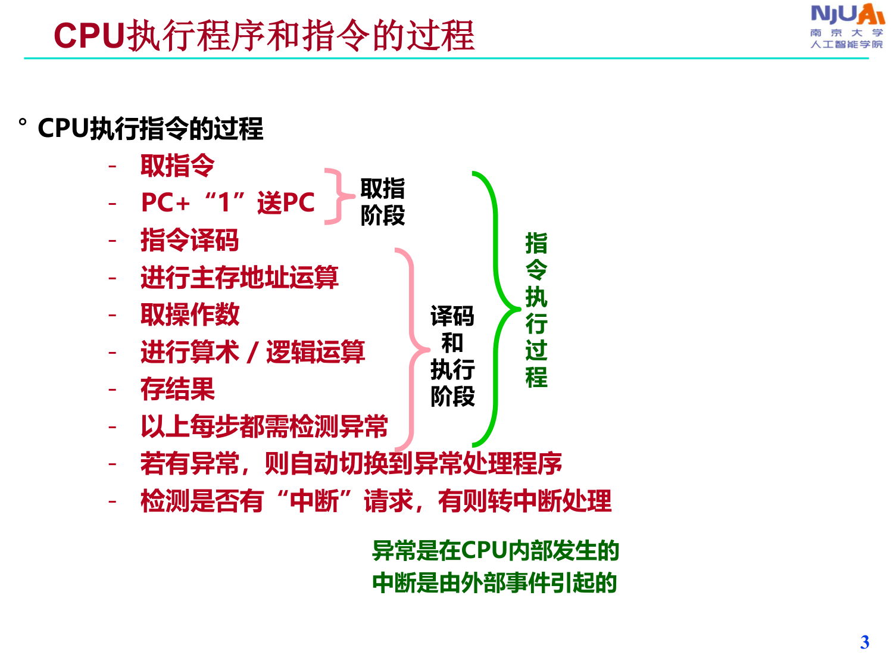
把上面的 while 循环展开成 10 个小步骤
每条指令的生命周期分成两大阶段：
- 取指阶段：① 取指令 (从内存 M[PC] 取出来放进 IR) ② PC+1 送 PC（这里"1"是抽象的，对 RV32I 实际是 PC+4，因为指令 32 位 = 4 字节）
- 译码 & 执行阶段：③ 译码 → ④ 算地址 → ⑤ 取操作数 → ⑥ ALU 运算 → ⑦ 存结果 → ⑧ 检测异常 → ⑨ 异常处理 → ⑩ 检查中断
为啥要分这么细
因为每一步在硬件上对应一个或多个"动作"。后面要做单周期、多周期、流水线，本质都是"这些步骤怎么排进时钟周期"的问题。记住这 10 步，是理解后面所有数据通路图的基本盘。
CPU 基本组成原理图
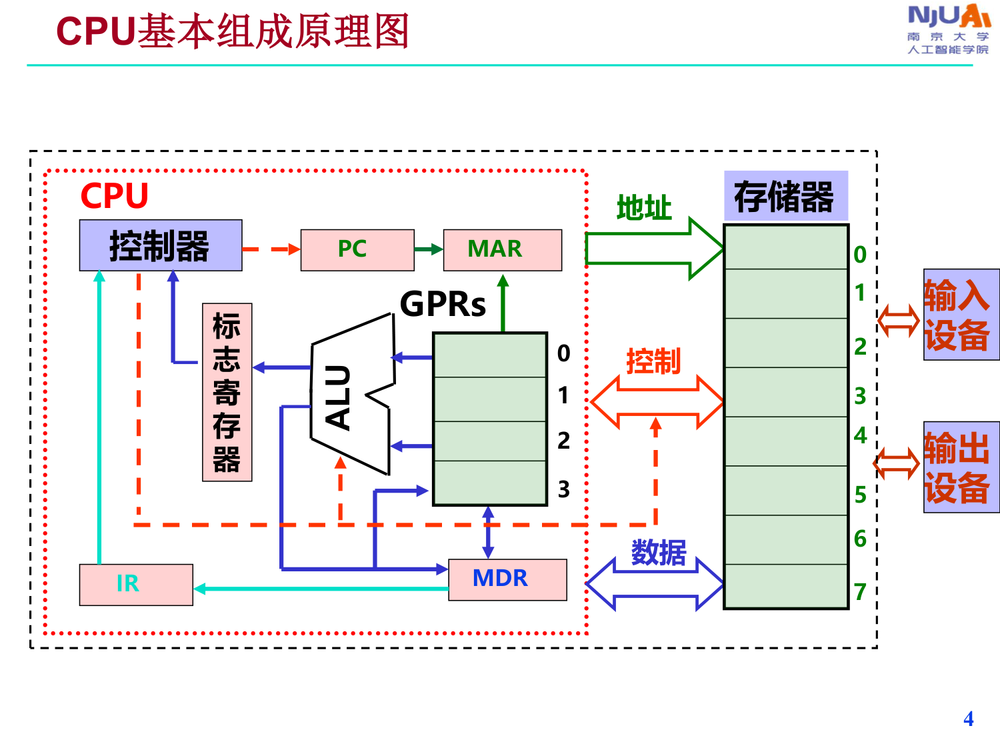
把图上的方框逐个认识一遍
这张图是你整章都会反复看到的"全家福"，先把每个方框是什么记住。
| 方框 | 全称 | 干啥 |
|---|---|---|
| PC | Program Counter | 指向下一条指令的地址 |
| IR | Instruction Register | 放刚刚取出的指令本身（32 位 0/1） |
| MAR | Memory Address Register | 要访问内存时，地址放这里 |
| MDR | Memory Data Register | 从内存读到的数据 / 要写的数据缓冲 |
| GPRs | General-Purpose Registers | 通用寄存器组，RV32I 有 32 个 32 位寄存器 |
| ALU | Arithmetic Logic Unit | 算术逻辑单元：加减、与或、比较 |
| 标志寄存器 | Flags / Status | 存最近一次运算的标志：零标志 Z、溢出 V、进位 C、符号 S |
| 控制器 | Control Unit | 大脑：发各种"使能/选择"信号给上面所有部件 |
箭头方向解读
看 PC → MAR：取指时，把 PC 的地址送进 MAR，去内存读指令。读回来的数据经 MDR → IR。这就是上一页"取指"两步的硬件实现。
CPU 基本结构 · Control Unit vs Datapath
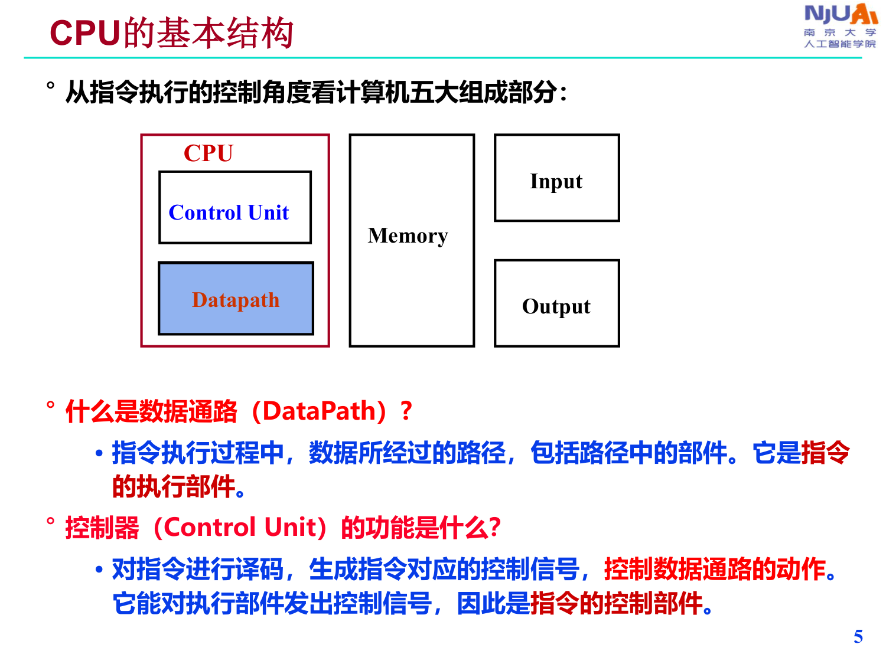
CPU 的两大分工
把上一页的"全家福"打包，CPU 内部其实只有两块：
- Datapath（数据通路）：所有能搬数据/算数据的部件。它是指令的执行部件——干活的。
- Control Unit（控制器）：根据指令译码结果，决定 Datapath 中每个 MUX 选哪个输入、ALU 做什么操作、要不要写回寄存器……它是指令的控制部件——指挥的。
为啥要做这个划分
因为设计方法完全不一样：
- Datapath = 元件 + 连线 → 组合 + 时序电路问题
- Control Unit = 输入是指令，输出是一堆 0/1 控制信号 → 布尔函数问题（真值表 → 逻辑表达式 → 电路）
所以接下来：第二讲专门搞 Datapath，第三讲专门搞 Control Unit。这套切分贯穿整章。
背景：组合电路 vs 时序电路（你最需要的复习）
下面整章都会用"操作元件 = 组合"、"状态元件 = 时序"两个词。先把这俩搞清楚，后面才不会懵。
组合逻辑（Combinational Logic）
- 没有记忆。输出 = 输入的纯函数（boolean function）。同样的输入永远给同样的输出。
- 典型：与门、或门、非门、加法器、MUX、Decoder、ALU。
- 不需要时钟！信号一进来，经过几纳秒的"门延迟"，输出就稳定了。
时序逻辑（Sequential Logic）
- 有记忆。输出不只看现在的输入，还看"上次存了什么"。
- 典型：D 触发器、寄存器、寄存器组、内存。
- 必须有时钟！时钟边沿到来时，才把"输入"写进去变成"新状态"。
为什么数字电路要这么分
因为"计算"和"记住"是两件不同的事。组合电路负责计算（瞬时的），时序电路负责记忆（跨时钟周期的）。一个 CPU = 一堆组合电路 + 一堆时序电路 + 时钟 + 控制信号。
• 操作元件 = 组合元件 = 算东西的 → ALU/Adder/MUX/Decoder/扩展器
• 状态元件 = 时序元件 = 存东西的 → PC/IR/MAR/MDR/GPRs/Memory
数据通路的基本结构
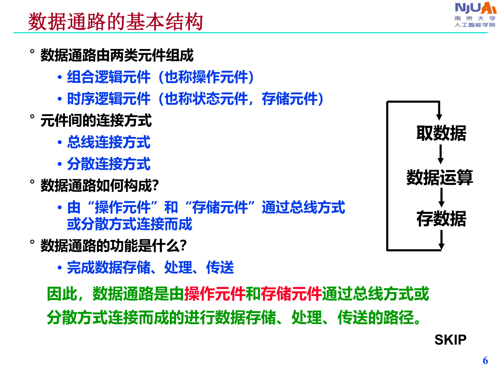
一句话总结
数据通路 = 操作元件（组合电路）+ 存储元件（时序电路）+ 连线方式（总线 or 分散）。功能就是"取数 → 数据运算 → 存数"循环。
操作元件：组合逻辑电路
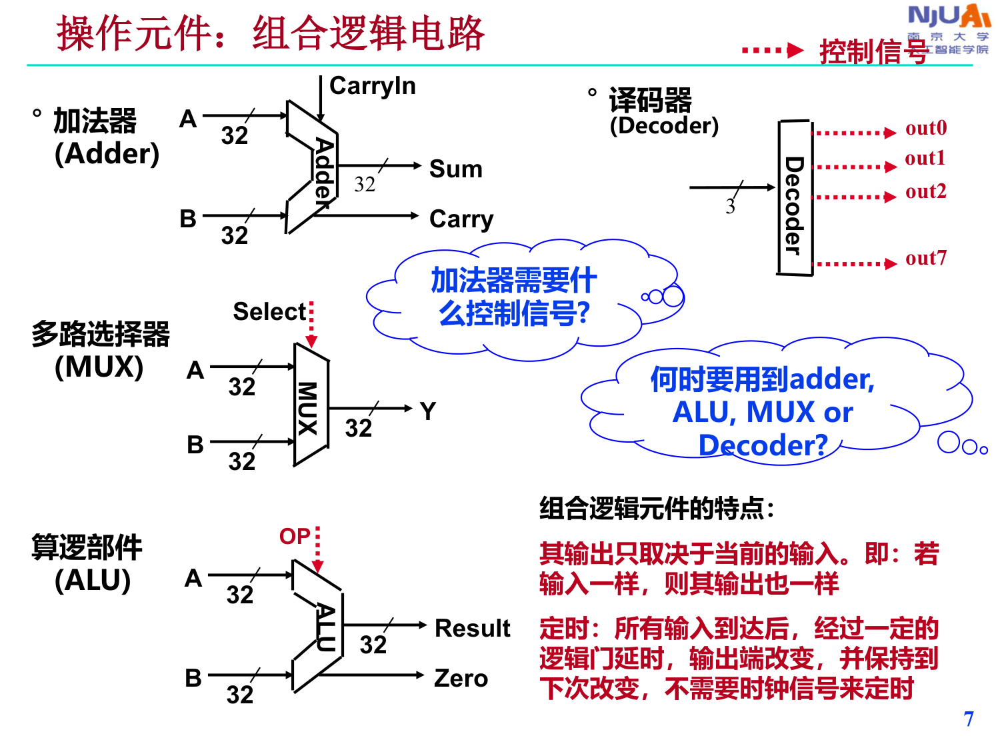
四个最常见的组合元件
- Adder（加法器）：输入 A、B、Cin（进位输入），输出 Sum、Carry。一次只能干"加法"。
- MUX（多路选择器）：N 个输入选 1 个输出，由
Select控制信号决定选谁。MUX 是数据通路的"红绿灯"，遇到岔路就放它。 - ALU（算逻部件）：万能加法器升级版，由
OP控制信号决定做哪种运算（加/减/与/或/比较……）。还会顺带产生Zero信号告诉外面"结果是不是 0"。 - Decoder（译码器）：N 位输入 → 2^N 位输出，选中其中一根线变 1（用来"选中某个寄存器/某个状态"）。
组合元件的两条特征（必背）
② 定时：输入到达后，经过一定的"门延迟"输出就改变，不需要时钟。
Select、OP 都是控制信号，由控制器从指令译码后产生（不是从指令字段直接给的）。状态元件：时序逻辑电路
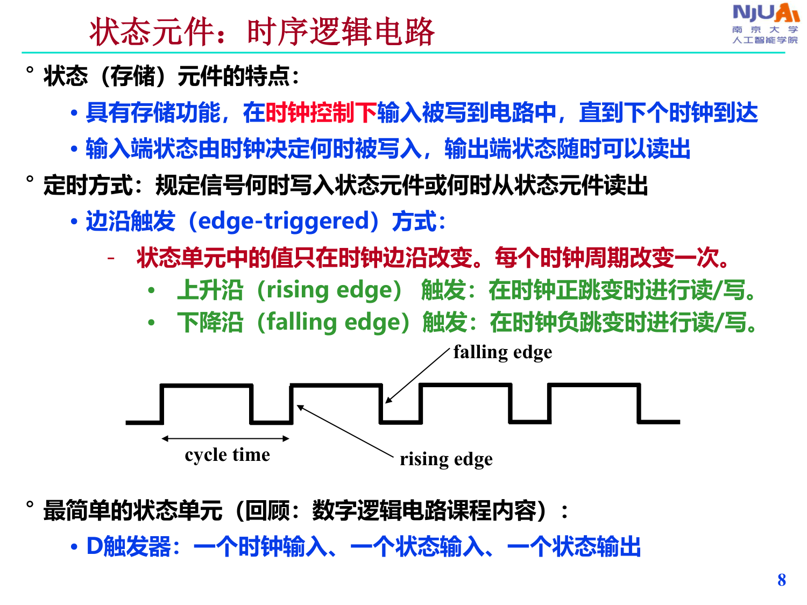
"状态元件"是啥
能存住一个值，跨过时钟周期仍然保留——这就是"状态"。一旦能存值，就需要规定"什么时候允许它改变"，否则它会乱跳，整个 CPU 失控。
边沿触发（edge-triggered）
- 规定：状态元件中的值只在时钟边沿改变，每个时钟周期最多变一次。
- 上升沿触发：时钟从 0 跳到 1 的瞬间读/写。
- 下降沿触发：时钟从 1 跳到 0 的瞬间读/写。
波形图上 cycle time = 一个完整周期的长度。整个 CPU 的"心跳"就是这个时钟。
最简状态元件 = D 触发器：一个时钟输入、一个数据输入 D、一个状态输出 Q。下一页详讲。
存储元件何时被改变？Setup / Hold / Clk-to-Q
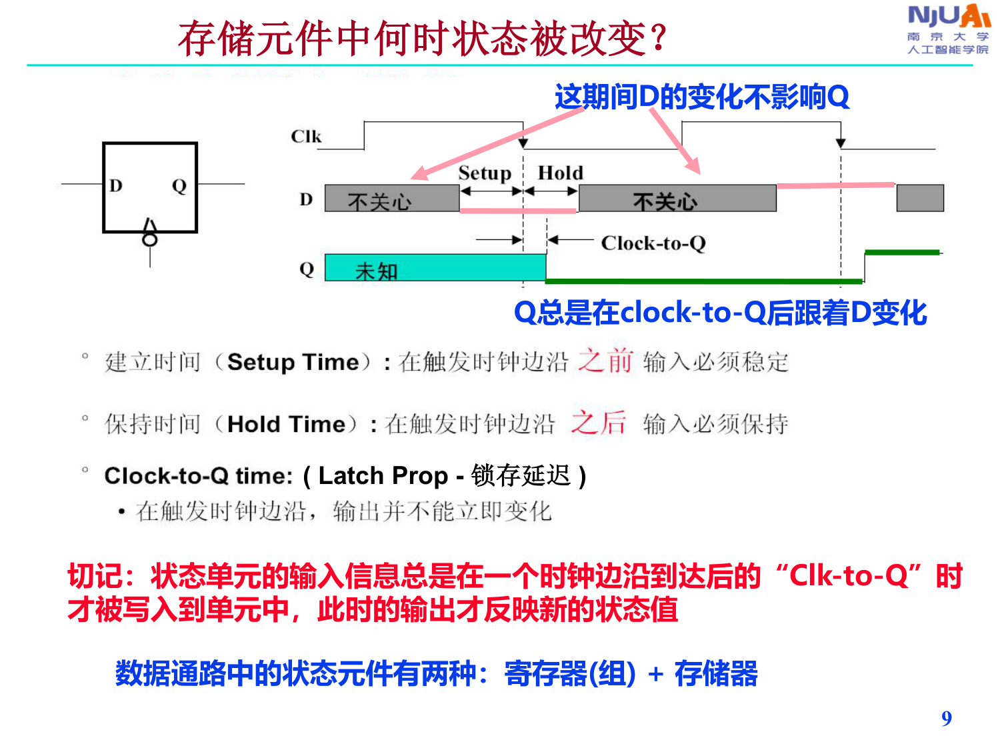
D 触发器的三个时间参数（一定要记死）
| 参数 | 含义 | 类比 |
|---|---|---|
| Setup Time | 时钟边沿到来之前，输入 D 必须稳定多久 | 考试前要提前到考场（提早稳定） |
| Hold Time | 时钟边沿到来之后，输入 D 必须再保持稳定多久 | 考完不能立刻走，要等监考完成确认 |
| Clk-to-Q | 时钟边沿到了，Q（输出）不会立刻变，要等这点延迟才能反映新值 | 从下单到上菜的延迟 |
为什么要懂这个
后面（p16-18）算"时钟周期最少要多长"就靠这三个参数。如果时钟周期太短，没等数据稳定就被锁住，结果就是错的。所以芯片主频不能无限提高——物理延迟是底线。
数据通路里的状态元件有两种
① 单个寄存器（PC、IR、MAR、MDR）
② 寄存器组 / 存储器（GPRs、Memory）
下一页分别讲。
存储元件：寄存器 & 寄存器组（Register File）
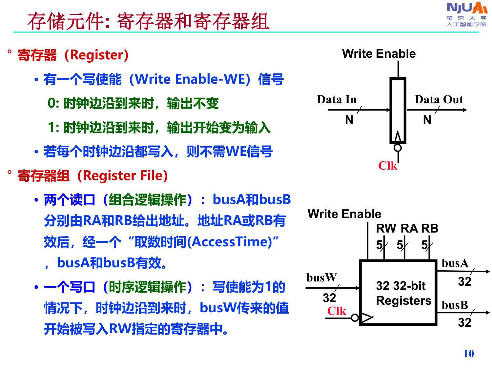
单个寄存器 Register
- 有一个 Write Enable (WE) 信号控制要不要写：
- WE=0：时钟边沿来时输出不变（这次时钟"无视"输入）
- WE=1：时钟边沿来时开始把输入写入
- 如果每个时钟边沿都要写（如 PC），就不需要 WE 信号了
寄存器组 Register File（GPRs 的实现）
RV32I 有 32 个 32 位通用寄存器。需要：
- 两个读口（busA、busB）：因为一条指令最多读 2 个源操作数（rs1, rs2）。读口由 RA、RB 给出地址（各 5 位，2⁵=32）。读是组合操作，地址给定后经一个 "access time" 数据就出来了，不用等时钟。
- 一个写口（busW）：写回结果 R[rd]。写是时序操作，需要 WE=1 且时钟边沿到来时才生效。
寄存器组的内部结构
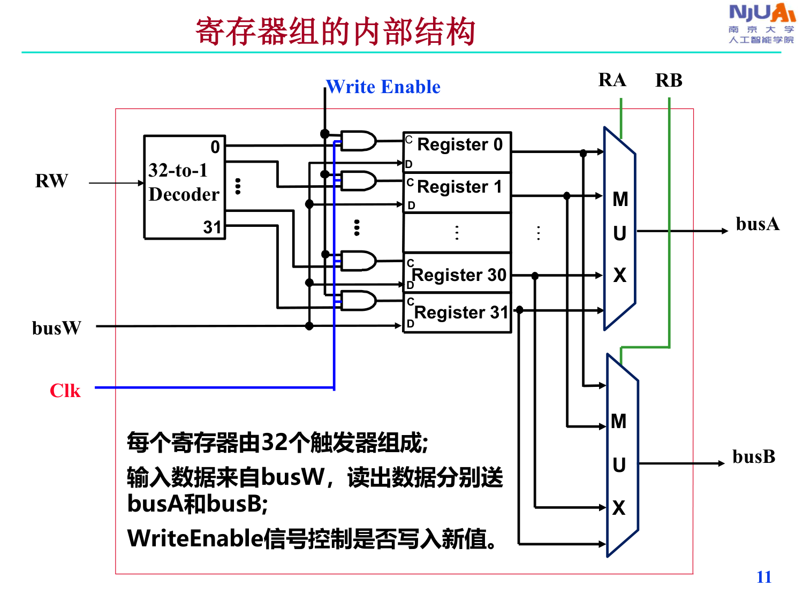
把图剖开看
- 左侧 32-to-1 Decoder：RW (5 位) 进来 → 解码出 32 根线 → 选中第 RW 个寄存器，让它准备接收数据。
- 每个 Register 旁的 AND 门：把 WE 信号和 Decoder 选中信号与起来——只有"WE=1 且 被选中"才会触发写。
- busW：要写入的数据，并行送到所有寄存器的 D 输入端（具体只有被选中的那个会真写进去）。
- 右侧两个 32-to-1 MUX：分别由 RA、RB 控制——选择哪个寄存器的输出送到 busA、busB。这就是"两个读口"的硬件实现。
整张图说明：寄存器组 = 32 个寄存器 + 1 个写 Decoder + 2 个读 MUX + 一堆 AND。它本身就是一个"组合 + 时序"的混合体。
存储元件：理想存储器（idealized memory）
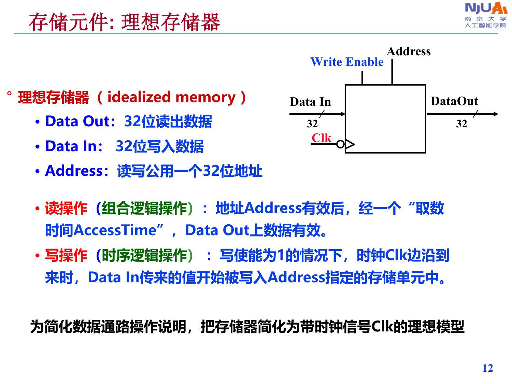
把内存抽象成一个"大寄存器组"
真实内存复杂（DRAM 行列、刷新、cache 层级），但为了讲数据通路，简化为：
- Address：32 位地址（读写共用）
- Data In：32 位写入数据
- Data Out：32 位读出数据
- Write Enable：要不要写
- Clk：写时序参考
读操作（组合）：地址有效后经过 access time，DataOut 上数据有效。
写操作（时序）：WE=1 且 Clk 边沿到，Data In 写入 Address 指定单元。
数据通路与时序控制（整体俯瞰）
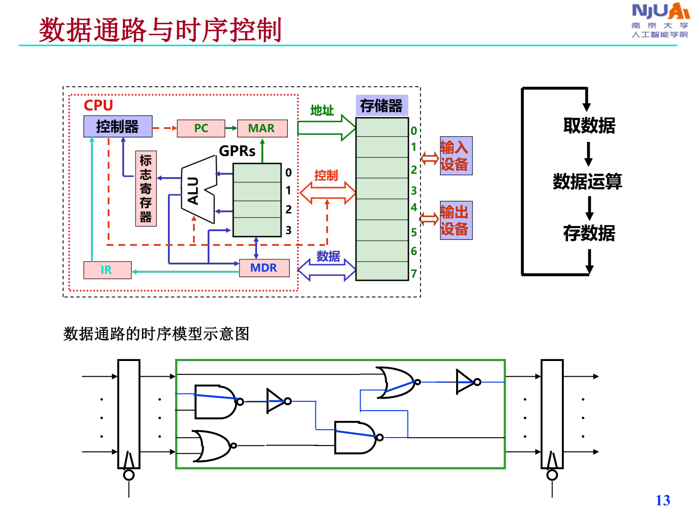
把整章的图组装起来
上半是 p4 的"CPU 全家福"再现一次。下半是时序模型示意：左右各一个时钟驱动的状态元件（寄存器），中间夹着一团组合逻辑（"... + 状态元件 + 操作元件 + 状态元件 + ..." 三明治结构）。
同步系统 / 指令周期 / 机器周期 / 节拍 / 脉冲
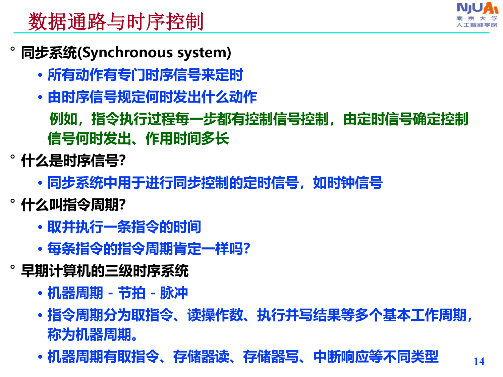
同步系统（Synchronous System）
所有动作有专门时序信号来定时——告诉每个部件"现在该做什么、做多久"。最常用的时序信号就是时钟。
四个层次的"时间单位"（早期计算机概念）
- 指令周期：取并执行一条指令所花总时间。不同指令的指令周期可能不同。
- 机器周期：一个指令周期分成的几个大阶段（取指、读操作数、执行写回、中断响应……）
- 节拍 (P0/P1/P2/P3)：机器周期内的"小阶段"（下一页波形）
- 脉冲 (C0/C1/C2/C3)：节拍内更细的定时信号
早期计算机的三级时序波形
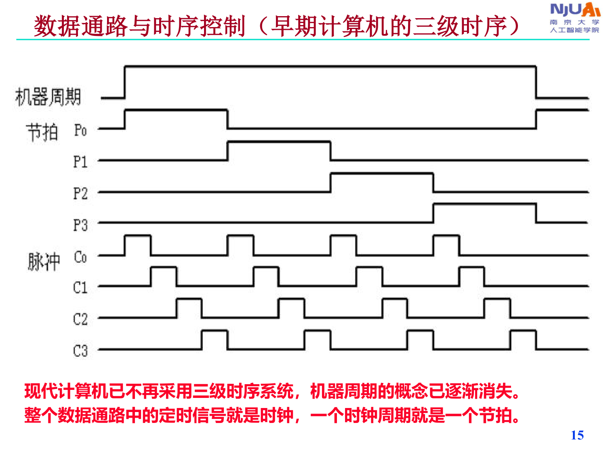
怎么读这张波形图
从上到下：
- 机器周期：最长的方框，覆盖整个图
- 节拍 P0~P3：把机器周期切成 4 段，每段做不同动作
- 脉冲 C0~C3：在每个节拍中提供更精细的"打点"信号
底部红字："现代计算机已不再采用三级时序系统，机器周期的概念已逐渐消失。整个数据通路中的定时信号就是时钟，一个时钟周期就是一个节拍。"
现代计算机的时钟周期：Cycle Time 公式
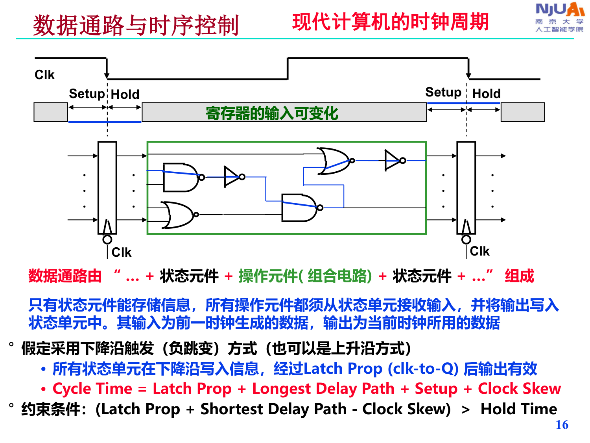
"时钟周期到底要多长"这个核心问题的答案
三明治结构：状态元件 → 组合逻辑 → 状态元件。下一个时钟边沿到来前，数据必须从左边触发器跑过组合逻辑，到达右边触发器并满足 Setup。
四项各是啥
- Latch Prop / Clk-to-Q：源触发器从时钟边沿到输出稳定的延迟
- Longest Delay Path：组合逻辑的最长路径延迟（最坏情况）
- Setup：目的触发器要求的"提前稳定时间"
- Clock Skew：时钟到不同触发器的时间差（物理上时钟线不一样长）
另一条约束（防止跑得太快）
意思：如果组合逻辑跑得太快，新数据可能"赶在前一个周期的 Hold Time 结束之前"就到了目的触发器，破坏了它的保持要求。
回顾：电路设计与分析（时序波形）
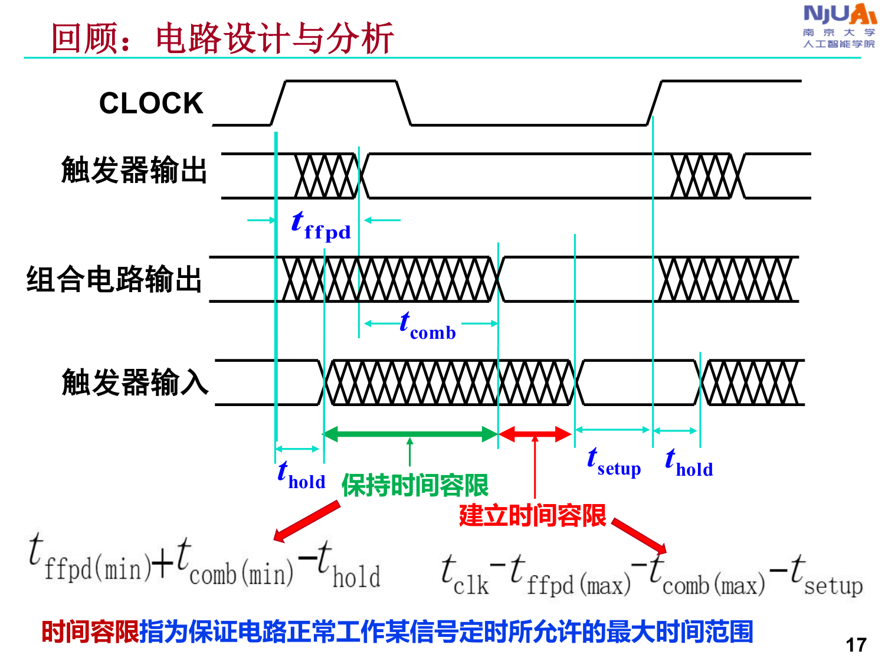
四条信号轨道的故事
- CLOCK：方波
- 触发器输出：时钟边沿后经
t_ffpd才稳定（叉号区域是"还在变"） - 组合电路输出：触发器输出经过组合电路又延迟
t_comb，才稳定 - 触发器输入：上一步的稳定值正是下一级触发器的输入
两个"容限"是什么
- 建立时间容限 =
t_clk − t_ffpd(max) − t_comb(max) − t_setup。剩余的"余地"。>0 才合法。 - 保持时间容限 =
t_ffpd(min) + t_comb(min) − t_hold。也要 >0。
两条时序约束（铁律）
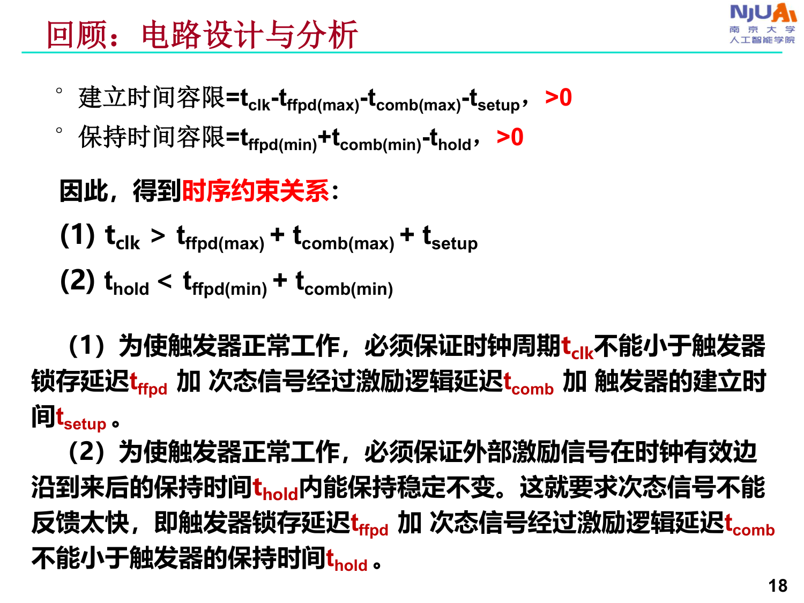
(2) t_hold < t_ffpd(min) + t_comb(min)
口语版
- 约束 (1) "别太慢"：时钟周期得够长，让数据走完最慢路径还能满足 Setup。
- 约束 (2) "别太快"：组合逻辑也不能跑太快，否则新数据冲掉了旧数据还没保持够 Hold。
本页是第一讲技术干货的高潮，记下两条公式。
计算机性能与 CPU 时间
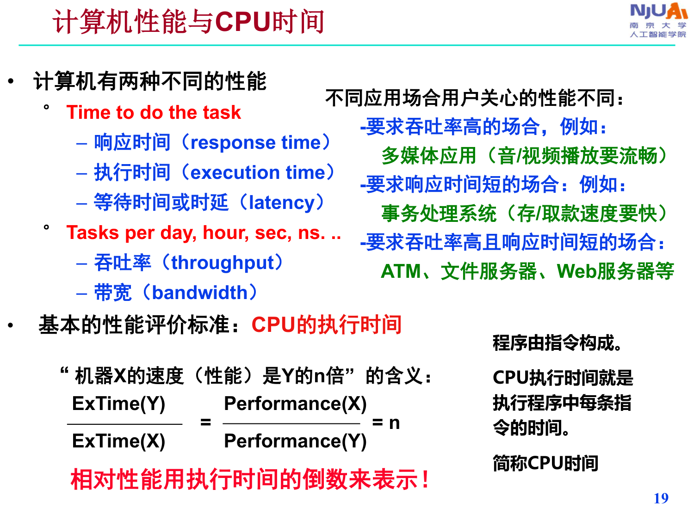
两种性能视角
| 视角 | 例子 | 关心啥 |
|---|---|---|
| Time to do the task | 响应时间、执行时间、Latency | "我点开网页要多久才能看到" |
| Tasks per unit time | Throughput、Bandwidth | "这服务器一秒能处理几个请求" |
不同应用关心不同性能
- 视频播放：吞吐率要高（不卡）
- ATM/取款机：响应时间要短（按完按钮立刻反应）
- Web 服务器：两者都要
ExTime(Y) / ExTime(X) = n。注意是倒数关系！计算机性能的测量
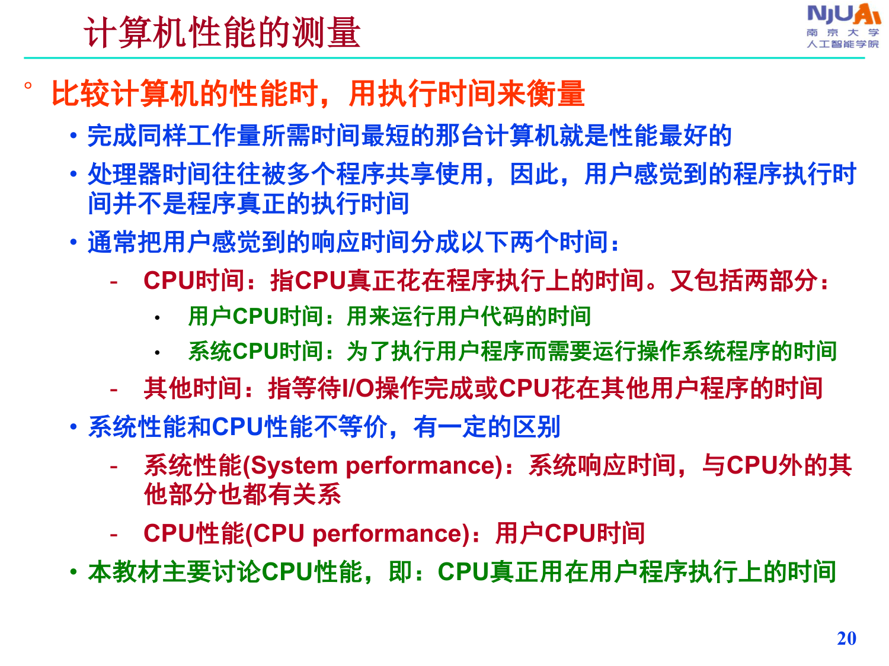
用户感觉到的响应时间分两部分
- CPU 时间：CPU 真正花在程序上的时间
- 用户 CPU 时间：跑用户代码的时间
- 系统 CPU 时间：为该程序跑 OS 代码的时间
- 其他时间：等 I/O 完成、CPU 跑其他程序的时间
系统性能 ≠ CPU 性能。系统性能还和 I/O、内存、磁盘有关。
CPU 执行时间的计算（核心公式）
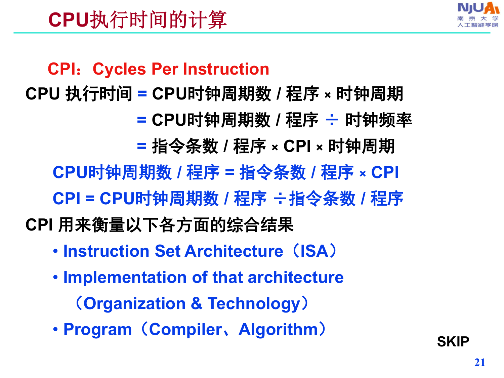
三大公式拆解
= 时钟周期数 / 程序 ÷ 时钟频率
= 指令条数 × CPI × 时钟周期
三个因子各是啥
- 指令条数 IC (Instruction Count)：程序总共要执行多少条指令。由编译器+ISA共同决定。
- CPI (Cycles Per Instruction)：平均每条指令花几个时钟。由组织结构（流水线深度、多发射）+编译器（指令选择）决定。
- 时钟周期 t_clk = 1/频率：一个周期多长。由组织+工艺技术决定。
CPI 衡量啥
CPI 反映 ISA + Organization + Compiler/Algorithm 的综合结果。
ISA + Organization + Technology 三层职责
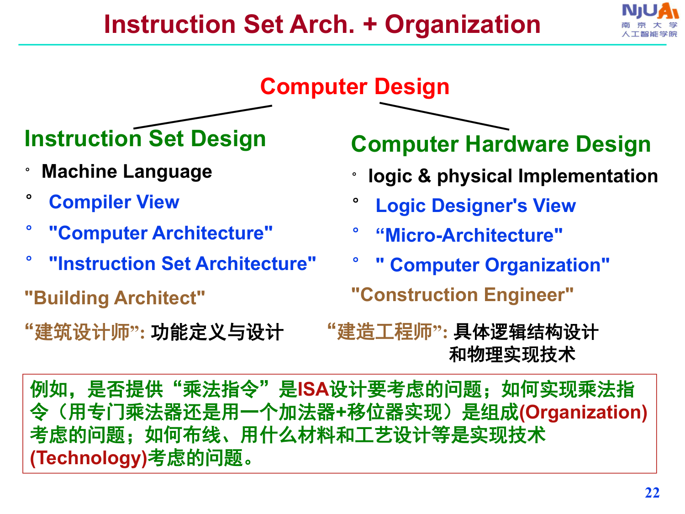
设计计算机的三层视角
| 层次 | 关心啥 | 视角 | 类比 |
|---|---|---|---|
| ISA | 指令集设计：有哪些指令、寻址方式 | 编译器视角 | 建筑设计师 |
| Organization (微架构) | 怎么实现 ISA：单周期/流水线/多发射 | 逻辑设计者 | 建造工程师 |
| Technology | 物理实现：工艺、布线 | 芯片厂 | 建材供应商 |
Aspects of CPU Performance（空表）
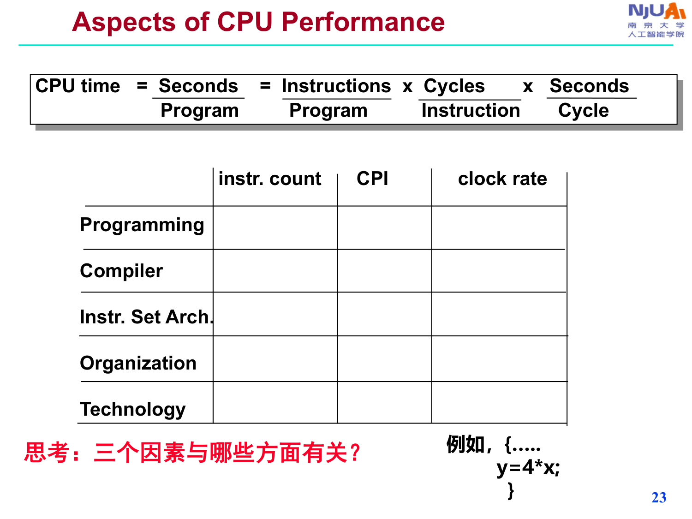
给你思考用的空表
左边 5 个层次（Programming/Compiler/ISA/Organization/Technology），上边 3 个因子（IC/CPI/clock rate）——每一格是该层次对该因子有没有影响。下一页给答案。
Aspects of CPU Performance（填表答案）
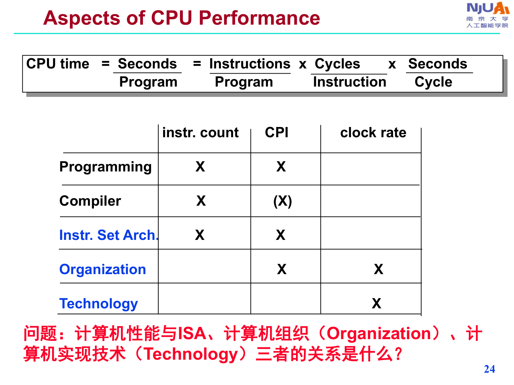
答案表
| IC | CPI | Clock rate | |
|---|---|---|---|
| Programming | X | X | — |
| Compiler | X | (X) | — |
| ISA | X | X | — |
| Organization | — | X | X |
| Technology | — | — | X |
怎么读这张表
- Programming/Compiler/ISA 这三层是"软件+指令集"侧 → 主要影响 IC 和 CPI，不影响主频。
- Organization（微架构）→ 影响 CPI 和主频（深流水线主频高，但 CPI 可能涨）。
- Technology（工艺）→ 只影响主频。
如何计算 CPI（程序综合 CPI）
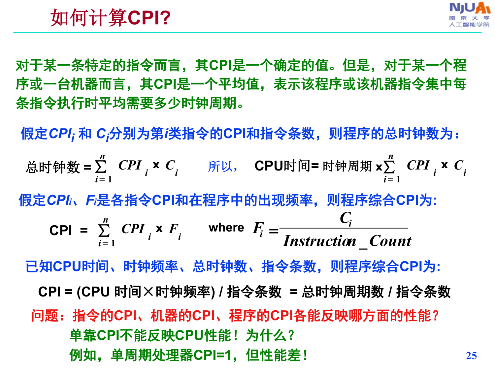
三种 CPI 的层次
- 某条特定指令的 CPI：一个固定值（设计时确定）
- 某个程序的 CPI：该程序所有指令的加权平均
- 某机器的 CPI：某种典型负载下的平均
程序 CPI = Σ (CPIᵢ × Fᵢ)，其中 Fᵢ = Cᵢ / 总指令数
已知 CPU 时间、时钟频率、指令数，反推 CPI：CPI = (CPU时间 × 时钟频率) / 指令条数
Example 1：频率 vs CPI 的权衡
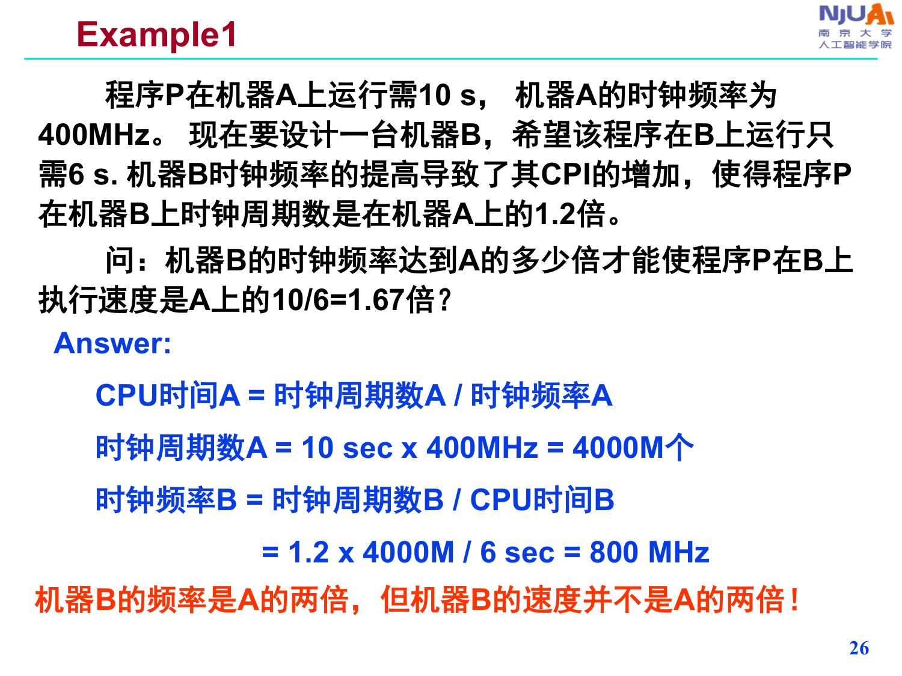
题目
程序 P 在机器 A 上跑 10s，A 的频率 400MHz。机器 B 想让 P 只跑 6s，但 B 的高频会让 CPI 变大 → 程序 P 在 B 上的时钟周期数是 A 上的 1.2 倍。问 B 的频率要达到 A 的几倍？
解题步骤（务必跟着算一遍）
- A 的时钟周期数 = CPU时间 × 频率 = 10s × 400MHz = 4000M 个
- B 的时钟周期数 = 1.2 × 4000M = 4800M 个
- B 的频率 = 周期数 / CPU时间 = 4800M / 6s = 800 MHz
- 所以 B 频率是 A 的 2 倍
Marketing Metrics：MIPS 和 MFLOPS 的局限
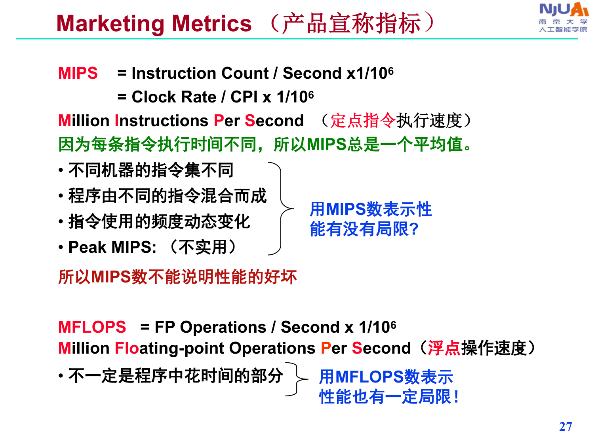
MIPS：每秒百万条指令
厂商喜欢拿来宣传，但有问题：
- 不同机器指令集不同，一条 ARM 指令 ≠ 一条 x86 指令。比较 MIPS 不公平。
- 程序由不同指令混合，频率动态变化。
- Peak MIPS（峰值）几乎不实用。
MFLOPS：每秒百万次浮点运算
专门衡量浮点性能，但不一定反映程序整体性能（如果你的程序大部分是整数操作，MFLOPS 高也没用）。
浮点操作速度单位（量级表）
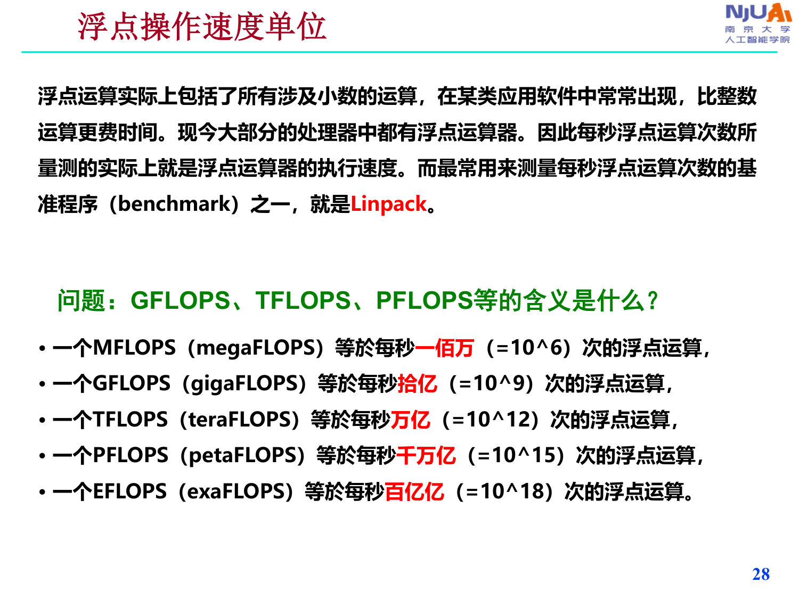
| 单位 | 等于 | 例子 |
|---|---|---|
| MFLOPS | 10⁶ | 早期个人电脑 |
| GFLOPS | 10⁹ | 当前 CPU 单核 |
| TFLOPS | 10¹² | 现代 GPU |
| PFLOPS | 10¹⁵ | 超算节点 |
| EFLOPS | 10¹⁸ | 最新顶级超算（如 Frontier） |
常用的 benchmark 是 Linpack（解线性方程组）。AI 时代还有 FP16/BF16/INT8 等更细的精度分类，量级会再翻几番。
选择性能评价程序（Benchmarks）
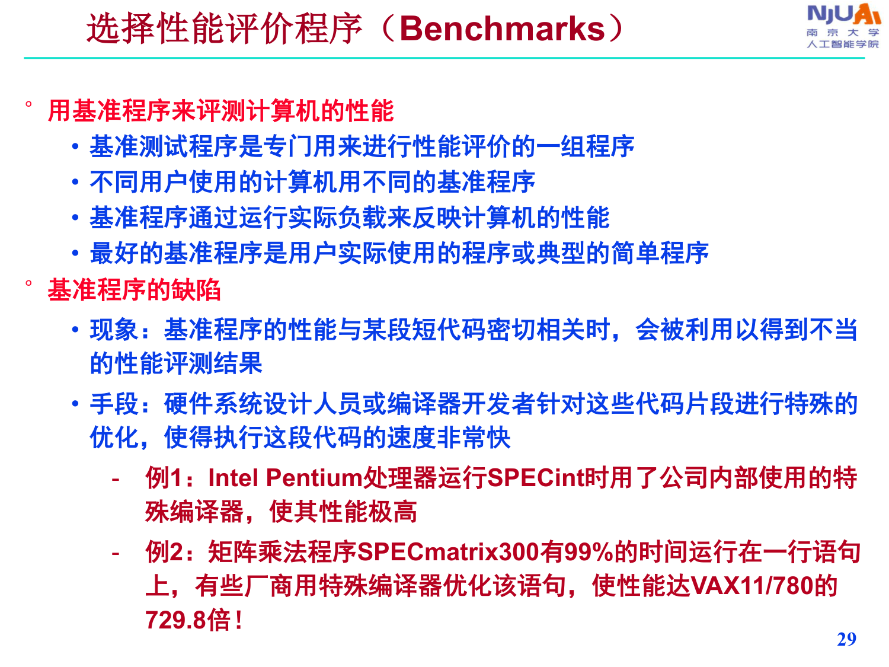
Benchmark 的理念
用真实负载来测性能，避开 MIPS 等理论指标的坑。最好用用户实际程序，否则用典型代表程序集（如 SPEC、Linpack）。
Benchmark 的陷阱
- Intel Pentium 跑 SPECint：用了内部特殊编译器，让性能虚高。
- SPECmatrix300：99% 时间花在一行代码上，被厂商特化编译后达到 729.8 倍提速——纯刷分。
第一讲到此结束，下一节进入第二讲：真正动手设计数据通路。
第二讲目录 · 跳过
第二讲会以 RV32I 的 9 条代表指令为目标，把数据通路一块一块拼出来。9 条指令：add/slt/sltu/ori/lui/lw/sw/beq/jal。
背景：RISC-V 是什么？为什么挑这 9 条？
RISC-V 一句话
一种开源的精简指令集架构（RISC = Reduced Instruction Set Computer）。所有指令32 位等长，只用 6 种格式（R/I/S/B/U/J），32 个通用寄存器（x0~x31）。x0 永远是 0。
"RV32I" 是啥
- RV = RISC-V
- 32 = 32 位通用寄存器宽度
- I = Integer base，整数基础指令集（共约 40 条）
挑的 9 条覆盖了哪些"类别"
| 指令 | 类型 | 代表的能力 |
|---|---|---|
| add | R | 寄存器-寄存器算术 |
| slt | R | 带符号比较 |
| sltu | R | 无符号比较 |
| ori | I | 寄存器-立即数逻辑 |
| lui | U | 长立即数加载 |
| lw | I (load) | 访存读 |
| sw | S | 访存写 |
| beq | B | 条件分支 |
| jal | J | 无条件跳转 + 链接 |
RTL 语法（你会反复看到）
R[rs1]：寄存器组中编号为 rs1 的那个寄存器的内容M[addr]：内存地址 addr 的内容SEXT(imm)：符号扩展（保留正负）ZEXT(imm)：零扩展（高位补 0）←：赋值，箭头指向"目的地"
设计处理器的五步
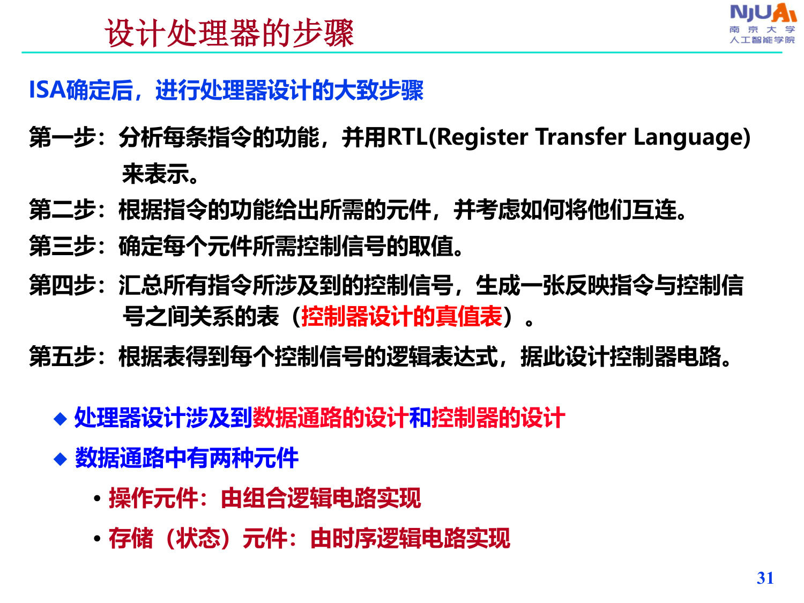
五步流水线（设计流程，不是执行流程！）
- 分析每条指令的功能，用 RTL 描述
- 根据功能列出所需元件，考虑互连
- 确定每个元件需要哪些控制信号、取啥值
- 汇总成"指令 × 控制信号"真值表（控制器设计的核心）
- 从真值表写出每个控制信号的逻辑表达式 → 设计控制器电路
数据通路里有两种元件：操作元件（组合电路）+ 存储/状态元件（时序电路）。p7-12 复习过了。
RISC-V 指令格式 + 9 条目标指令
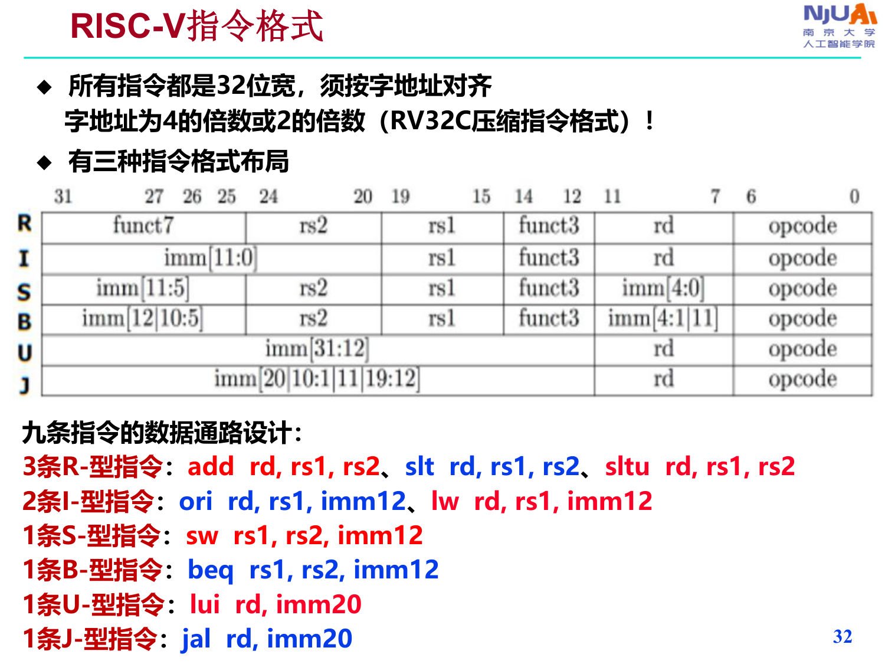
32 位指令的 6 种布局
| 类型 | 用途 | 立即数位置 |
|---|---|---|
| R | 寄存器-寄存器 | 无立即数 |
| I | 寄存器-立即数 / Load | 12 位低位 |
| S | Store | 12 位拆两段 |
| B | 条件分支 | 12 位拆 4 段（注意 imm[12:1] 表示） |
| U | 长立即数 | 20 位高位 |
| J | 无条件跳转 | 20 位拼接 |
9 条指令快速记忆
3 R + 2 I + 1 S + 1 B + 1 U + 1 J = 9 条。
目标指令的 RTL 功能描述
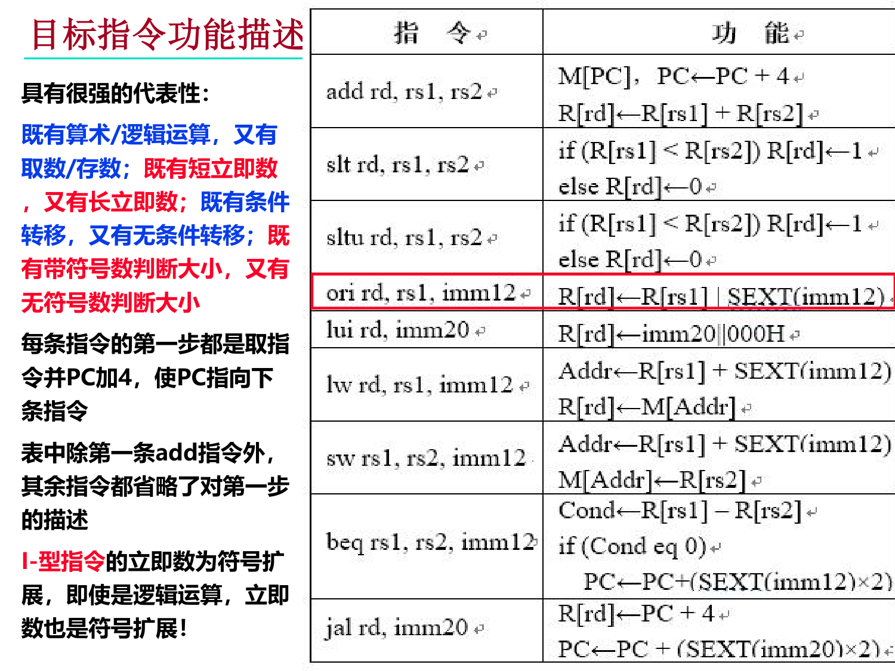
9 条指令的 RTL 一览
| 指令 | RTL |
|---|---|
add rd,rs1,rs2 | R[rd] ← R[rs1] + R[rs2] |
slt rd,rs1,rs2 | if (R[rs1] < R[rs2]) R[rd]←1 else 0 (带符号) |
sltu rd,rs1,rs2 | 同上但无符号 |
ori rd,rs1,imm12 | R[rd] ← R[rs1] | SEXT(imm12) |
lui rd,imm20 | R[rd] ← imm20 ‖ 12'h000（高位放 imm，低 12 位补 0） |
lw rd,rs1,imm12 | Addr=R[rs1]+SEXT(imm12); R[rd]←M[Addr] |
sw rs1,rs2,imm12 | M[R[rs1]+SEXT(imm12)] ← R[rs2] |
beq rs1,rs2,imm12 | if (R[rs1]=R[rs2]) PC←PC+SEXT(imm12)×2 |
jal rd,imm20 | R[rd]←PC+4; PC←PC+SEXT(imm20)×2 |
第一步永远是取指 + PC+4（表中除 add 外都省略了这一步）。
扩展器：5 种立即数拼接方式
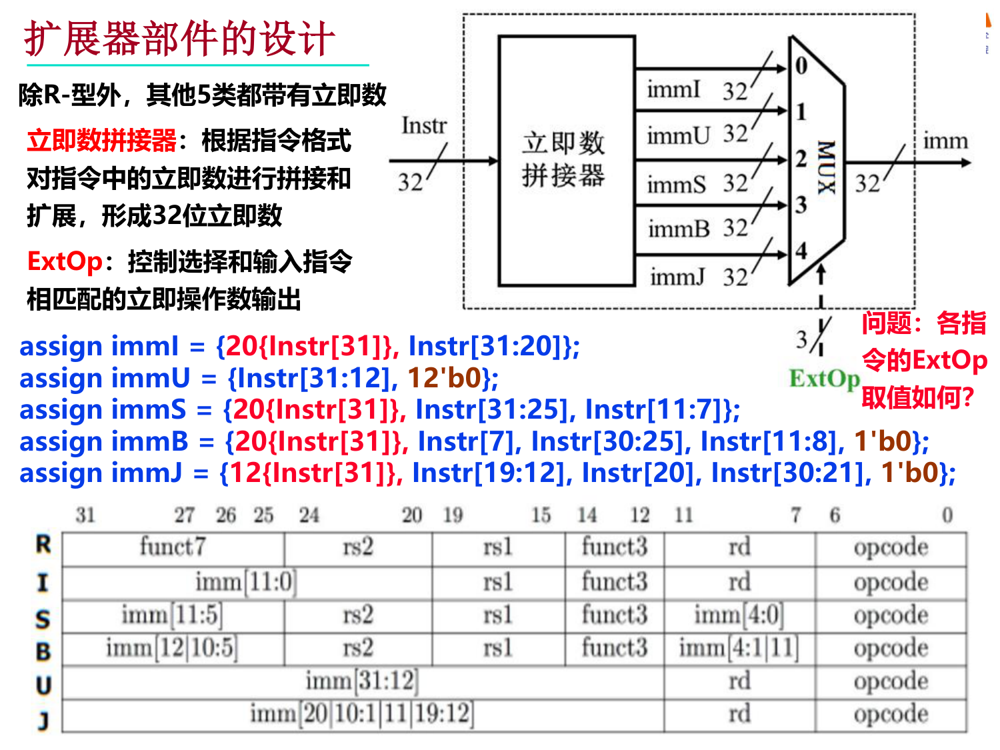
为啥要扩展器
RV32I 指令是 32 位，但立即数字段最多 20 位（一般 12 位）。要参与 32 位 ALU 运算，必须先扩展到 32 位。而且不同指令格式的立即数位置和拼接方式都不同，所以需要一个统一的"立即数拼接器"。
5 种拼接方式（Verilog 语法 {...} 表示位拼接）
- immI = {20{Instr[31]}, Instr[31:20]} — 取 [31:20]，高位用符号位 Instr[31] 复制 20 次填充
- immU = {Instr[31:12], 12'b0} — 高 20 位放原位，低 12 位补 0（lui 专用）
- immS = {20{Instr[31]}, Instr[31:25], Instr[11:7]} — Store 立即数被拆在两段
- immB = {20{Instr[31]}, Instr[7], Instr[30:25], Instr[11:8], 1'b0} — Branch 立即数四段拆，且最低位强制 0（2字节对齐）
- immJ = {12{Instr[31]}, Instr[19:12], Instr[20], Instr[30:21], 1'b0} — Jump 立即数同理
右上 MUX：5 个输入 (immI/U/S/B/J) 选一个输出，由控制信号 ExtOp（3 位）选择。
扩展器控制信号 ExtOp 取值表
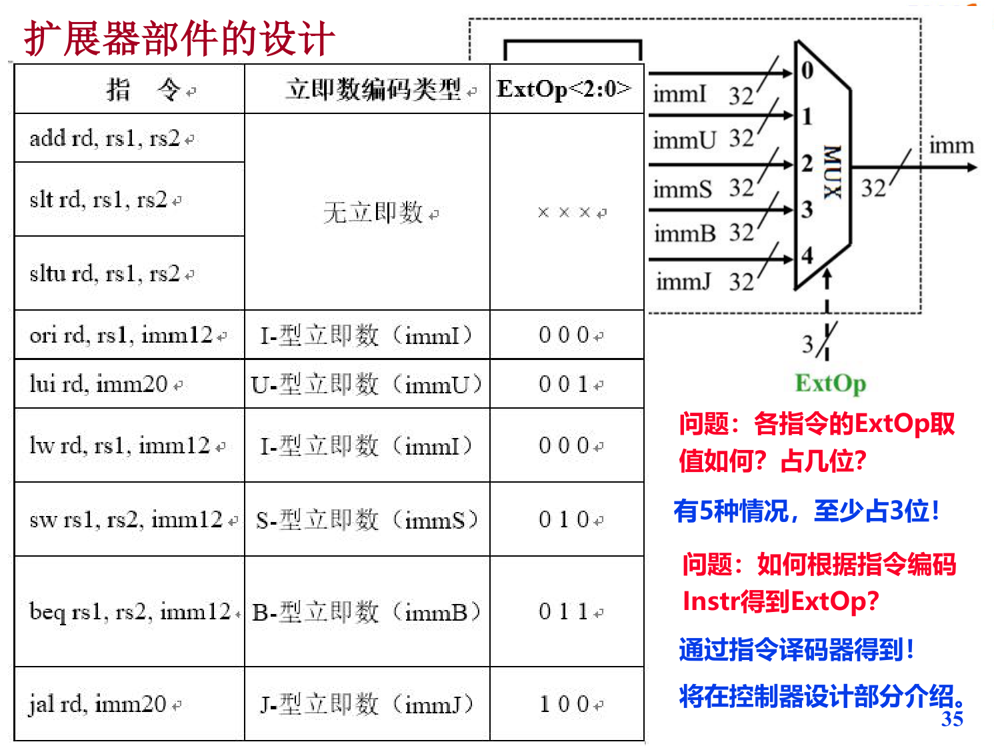
每条指令对应的 ExtOp
| 指令 | 立即数类型 | ExtOp<2:0> |
|---|---|---|
| add/slt/sltu (R 型) | 无立即数 | ×××（无所谓） |
| ori | immI | 000 |
| lui | immU | 001 |
| lw | immI | 000 |
| sw | immS | 010 |
| beq | immB | 011 |
| jal | immJ | 100 |
5 种类型 → 至少要 3 位编码。这个表后面 (p73) 会被合并进总控制信号表。
背景：什么是"控制信号"？它来自哪里？
控制信号的本质
控制信号 = 由控制器输出、用来"使能/选择"数据通路中各部件行为的 0/1 信号。
例子
RegWr（1 位）：要不要写回寄存器组。0=不写，1=写ALUctr（4 位）：让 ALU 做什么操作（加/减/与/或/比较）ALUBSrc（2 位）：ALU 的 B 输入端 MUX 选哪个（寄存器/立即数/"4"）MemWr：要不要写数据存储器MemtoReg：写回寄存器的值是来自 ALU 还是 内存Branch/Jump：是否要改 PC
来源
控制信号不是从指令字段直接取出来的。控制器拿到 opcode（和有时 funct3/funct7），译码后生成这些信号。本质上：
f 是一组布尔函数，可以用真值表表示，再用PLA（可编程逻辑阵列）实现。第三讲（p73-79）详讲这步。
记忆法：图上的虚线红线
第二讲数据通路图里，所有虚线红色信号都是控制信号。它们从图外的"控制器盒子"伸进来——你画数据通路时只需要标"这里需要一根 ALUctr"，不用管它从哪生成。生成是控制器的活。
算术逻辑部件 ALU 的设计
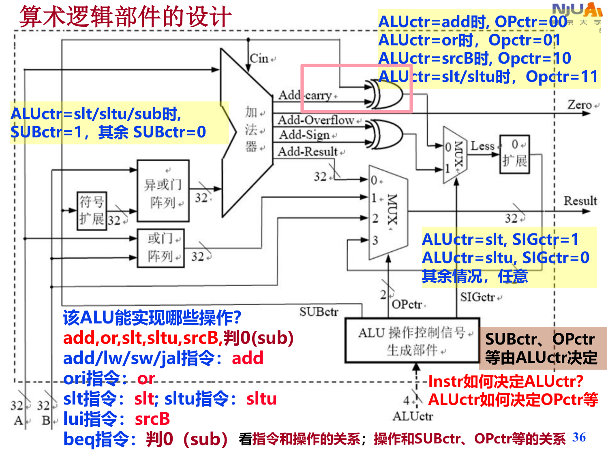
这个 ALU 能做什么
add, or, slt, sltu, srcB（直通 B）, 判 0（sub）——这 6 种操作覆盖了 9 条指令的所有计算需求。
9 条指令分别用哪种 ALU 操作
- add/lw/sw/jal: add（lw/sw 算地址也是加）
- ori: or
- slt: slt; sltu: sltu
- lui: srcB（直接把扩展后的立即数透传到输出）
- beq: 判 0（即 sub 然后看 Zero 标志）
图上三个子控制信号
- SUBctr：是否减法（slt/sltu/sub 时为 1）
- SIGctr：是否带符号比较（slt=1, sltu=0）
- OPctr：选择最后输出 MUX（加=00, 或=01, srcB=10, slt/sltu=11）
这三个子信号都由 ALUctr (4 位) 通过 "ALU 操作控制信号生成部件"（一个组合逻辑小盒子）派生出来。
ALU 真值表 + 三个子信号的逻辑表达式
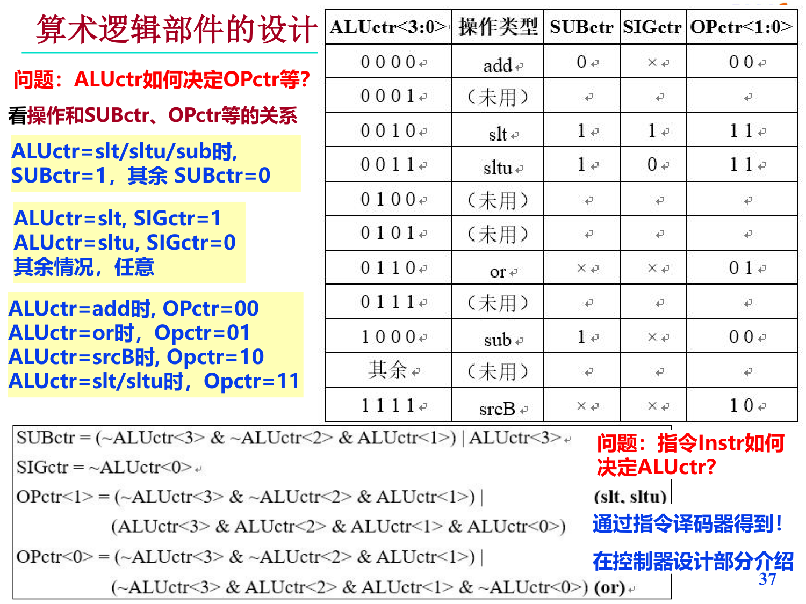
ALUctr 编码（4 位）→ 操作 + 三个子信号
| ALUctr | 操作 | SUBctr | SIGctr | OPctr |
|---|---|---|---|---|
| 0000 | add | 0 | × | 00 |
| 0010 | slt | 1 | 1 | 11 |
| 0011 | sltu | 1 | 0 | 11 |
| 0110 | or | × | × | 01 |
| 1000 | sub | 1 | × | 00 |
| 1111 | srcB | × | × | 10 |
从表写出表达式
SUBctr 在 ALUctr ∈ {0010, 0011, 1000} 时为 1，其他为 0。化简后：
SUBctr = (~ALUctr[3] & ~ALUctr[2] & ALUctr[1]) | ALUctr[3]
SIGctr = ~ALUctr[0]（只在 slt 时为 1）
取指部件 Instruction Fetch Unit
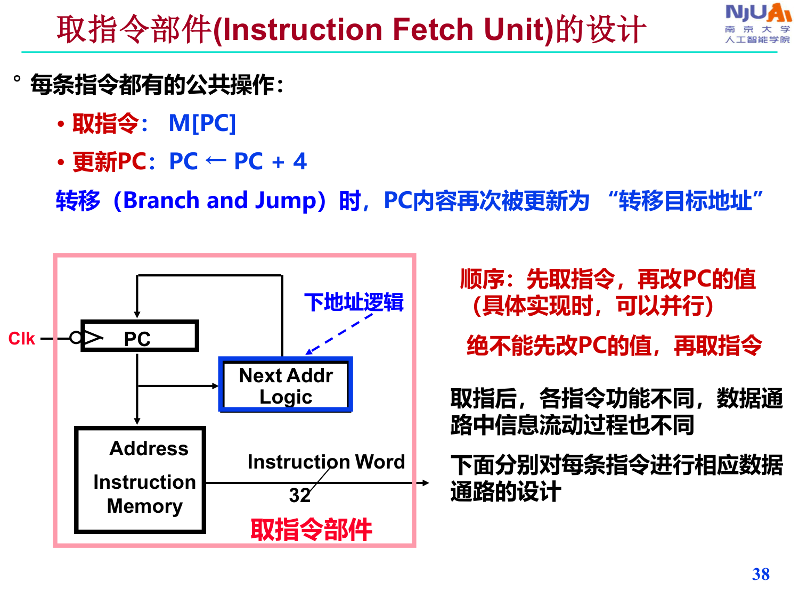
每条指令的公共操作
- 取指令：M[PC]
- 更新 PC：PC ← PC + 4（顺序情况）
- 分支/跳转时：PC ← 分支目标地址
取指部件结构
- PC：32 位寄存器
- Instruction Memory：以 PC 为地址，输出 32 位指令
- Next Addr Logic：算下条 PC（PC+4 / PC+offset / PC+immJ 三选一）
R-型指令的数据通路
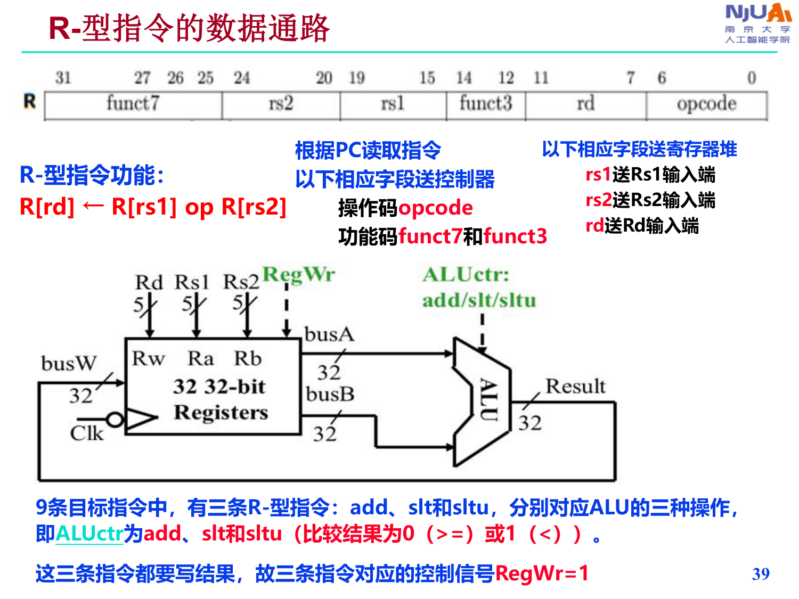
R 型功能
R[rd] ← R[rs1] op R[rs2]。三条 R 型：add/slt/sltu，分别对应 ALU 三种操作。
数据流
- PC 取指 → 拿到 32 位指令 Instr
- Instr[24:20]=rs2 送 Rb，Instr[19:15]=rs1 送 Ra，Instr[11:7]=rd 送 Rw（写回地址）
- 寄存器组读出 busA=R[rs1], busB=R[rs2]
- 送入 ALU，ALUctr 由 opcode + funct3 决定
- 结果回到 busW，RegWr=1 时写入 rd
控制信号
三条 R 型都要写结果，所以 RegWr=1。ALUctr: add=0000 / slt=0010 / sltu=0011。
R 型对应的 ALU 设置
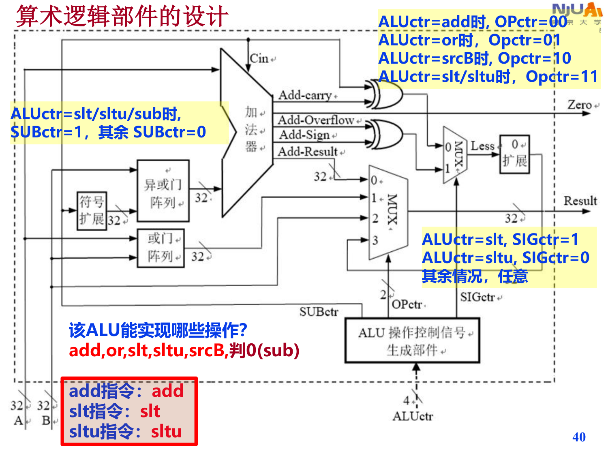
这张图复用 p36 ALU 内部图，红框标出"add 指令→add"、"slt→slt"、"sltu→sltu"。R 型三条只用 ALU 的算术比较能力。
I-型运算指令 (ori) 的数据通路
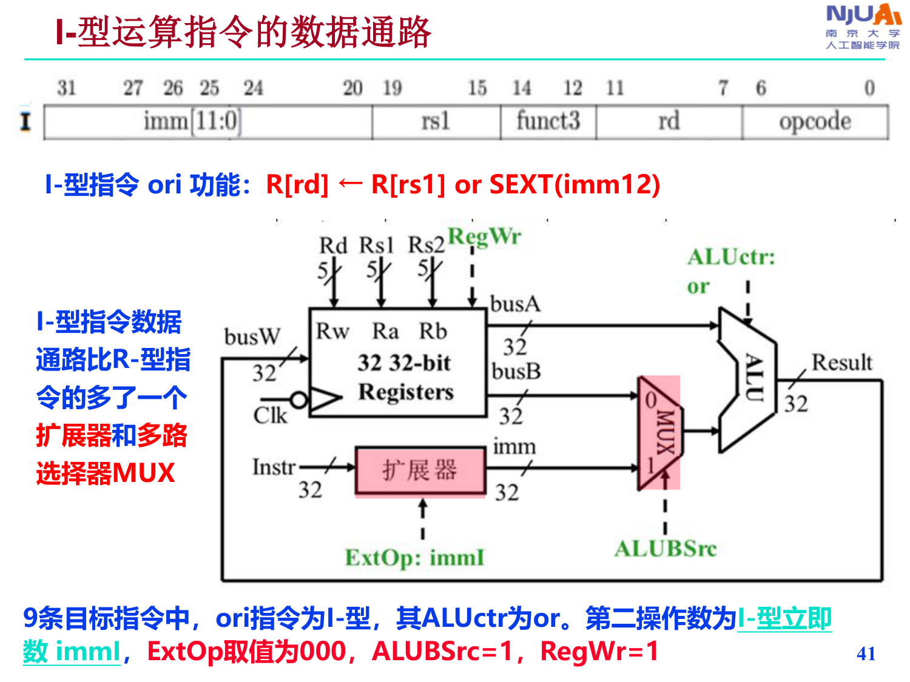
新增了什么
相比 R 型，多了：
- 扩展器：把 Instr 中的立即数字段扩展成 32 位 imm
- ALUBSrc MUX：ALU 的 B 输入端选择——是 busB（来自寄存器组）还是 imm（来自扩展器）
控制信号取值
ori rd, rs1, imm12 → R[rd] ← R[rs1] | SEXT(imm12)：
- ExtOp = immI (000)：选 12 位符号扩展
- ALUBSrc = 1：选 imm 走 ALU 的 B 端
- ALUctr = or
- RegWr = 1
ori 对应的 ExtOp 设置
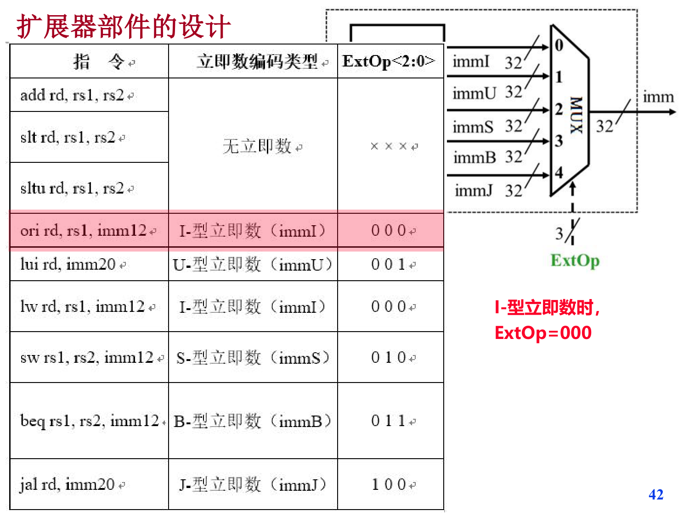
红框：ori 用 immI → ExtOp=000。这页就是 p35 表中 ori 那一行的可视化。
U-型指令 (lui) 的数据通路
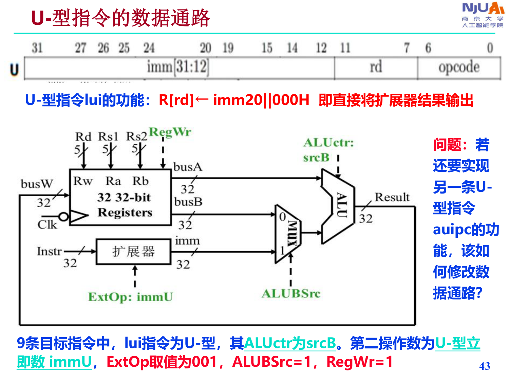
lui 干啥
R[rd] ← imm20 ‖ 000H（把 20 位立即数放到 rd 的高 20 位，低 12 位补 0）。用途：加载长立即数到寄存器（结合 ori 可以加载任意 32 位常数）。
怎么用现有数据通路实现
注意 lui 不需要任何寄存器源——直接把扩展后的 immU 写回 rd 即可。复用 ALU 的 srcB 模式：
- ExtOp = immU (001)
- ALUBSrc = 1（选 imm）
- ALUctr = srcB (1111)：让 ALU 直接把 B 输入透传到 Result
- RegWr = 1
lui 对应的 ALU 设置
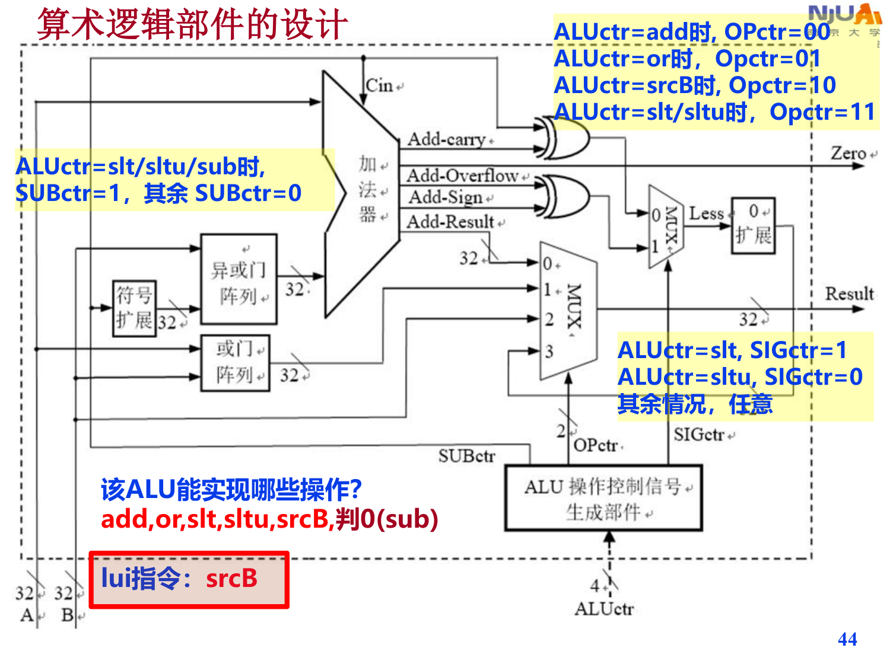
ALUctr=srcB (1111)：ALU 内部 MUX 选择 OPctr=10，把 B 输入直通到 Result。
lui 对应的 ExtOp 设置
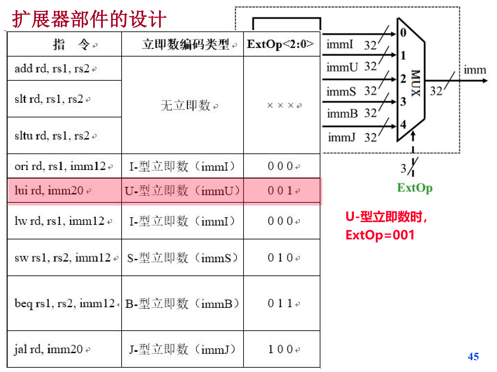
红框：lui 用 immU → ExtOp=001。
Load/Store 数据通路
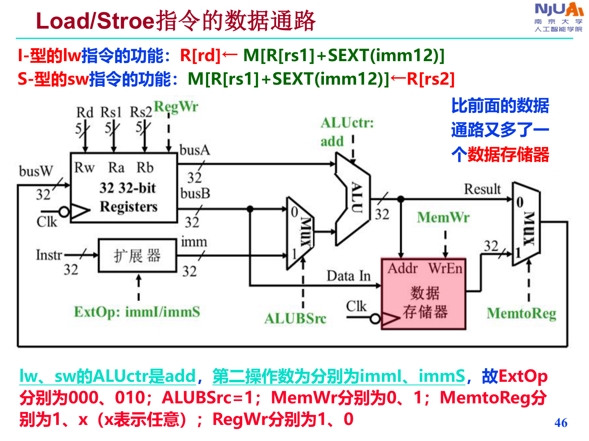
新增了什么
这是第一次出现"数据存储器"。之前只有指令存储器（藏在取指部件里），现在数据通路里多了一个独立的 Data Memory。
lw / sw 数据流
lw: R[rd] ← M[R[rs1] + SEXT(imm12)]
- ALU 算 Addr = R[rs1] + imm（ALUctr=add）
- Addr 送数据存储器，MemWr=0，读出数据
- 读出的数据经过最右边的 MUX（由 MemtoReg 选）回到 busW
- RegWr=1 写入 rd
sw: M[R[rs1] + SEXT(imm12)] ← R[rs2]
- ALU 算 Addr = R[rs1] + imm（同样 add）
- busB（即 R[rs2]）送 Data In
- MemWr=1：写入数据存储器
- RegWr=0（不写回寄存器）
控制信号关键对比表
| lw | sw | |
|---|---|---|
| ExtOp | immI (000) | immS (010) |
| ALUBSrc | 1 | 1 |
| ALUctr | add | add |
| MemWr | 0 | 1 |
| MemtoReg | 1 | × |
| RegWr | 1 | 0 |
lw/sw 对应的 ALU 设置
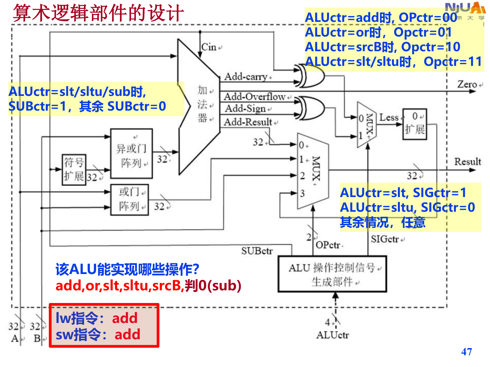
lw/sw 都用 ALU 的加法来算访存地址。ALUctr=0000 (add)。
lw/sw 对应的 ExtOp 设置
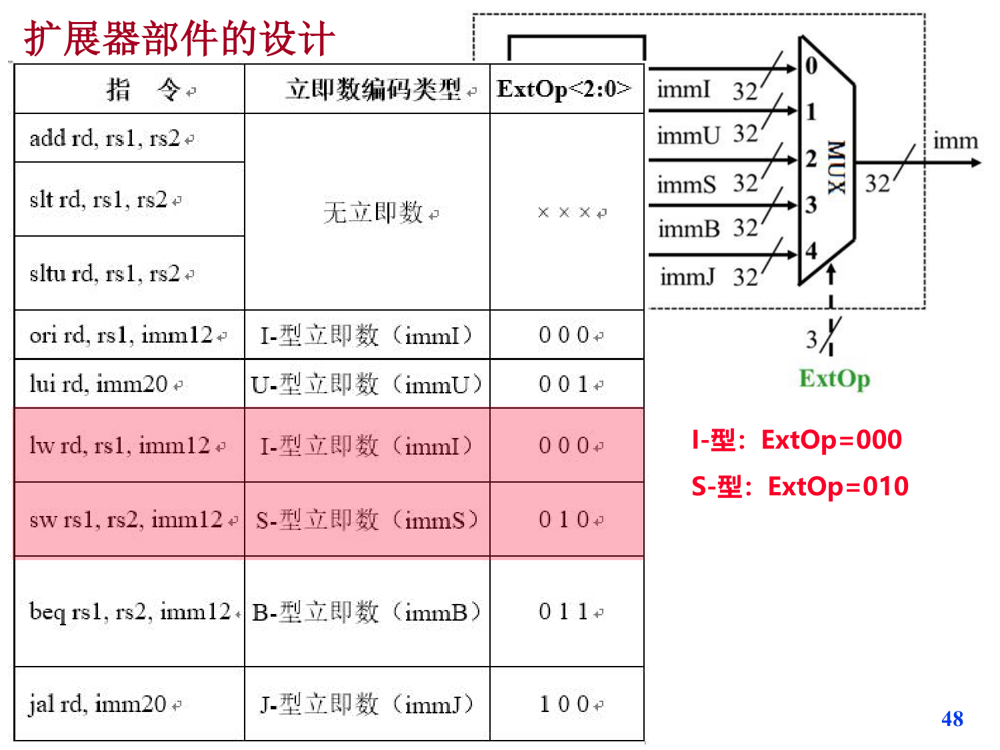
lw: I 型 → ExtOp=000；sw: S 型 → ExtOp=010。注意两者的立即数虽都来自指令的 12 位，但 S 型立即数被拆成两段，所以拼接方式不同。
B-型指令 (beq) 的数据通路
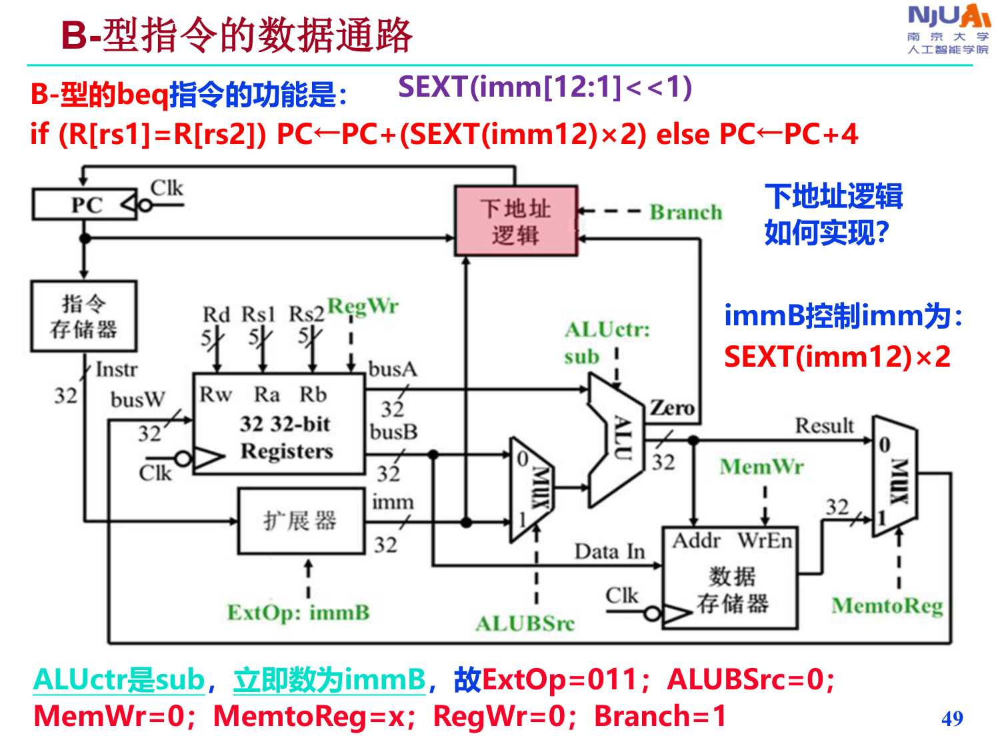
beq 干啥
if (R[rs1]=R[rs2]) PC ← PC + SEXT(imm12)×2 else PC ← PC + 4
怎么判相等
"相等" = "差为 0"，所以让 ALU 做减法（ALUctr=sub），然后看 ALU 输出的 Zero 标志。Zero=1 → 相等 → 跳转。
新增了什么
下地址逻辑：根据 Branch 控制信号和 Zero 标志决定 PC 下一拍是 PC+4 还是 PC+offset。
控制信号
- ExtOp = immB (011)：注意立即数已经乘 2（即 SEXT(imm12)×2，硬件上是左移 1 位）
- ALUBSrc = 0（B 端选寄存器 busB，因为要比较 R[rs1] vs R[rs2]）
- ALUctr = sub (1000)
- MemWr=0, RegWr=0（不写任何东西，只改 PC）
- Branch=1（告诉下地址逻辑"这是个分支指令，要看 Zero"）
beq 对应的 ALU 设置
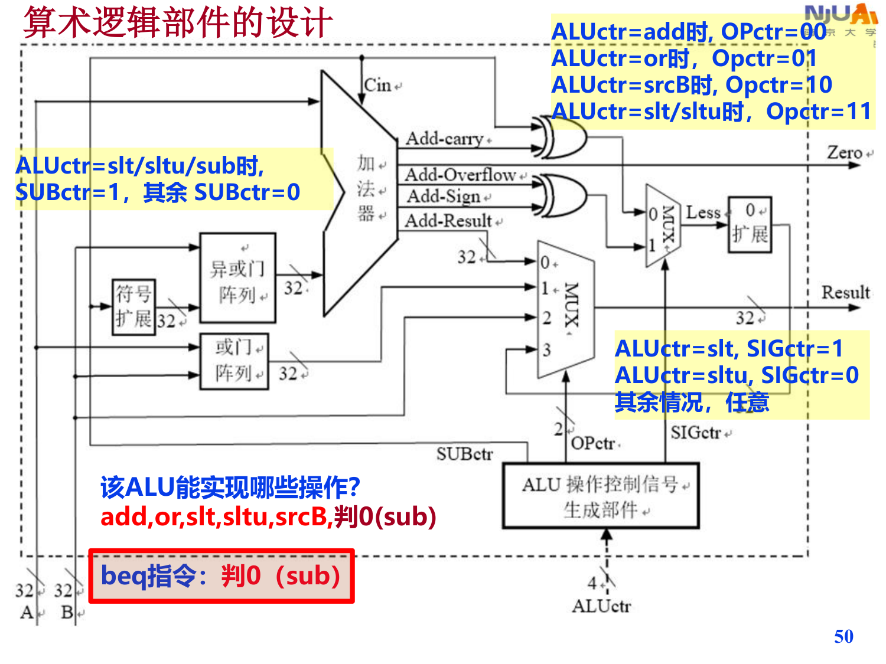
beq → ALU 做 "判 0(sub)"。本质就是减法，结果不要，只看 Zero 标志。
beq 对应的 ExtOp 设置
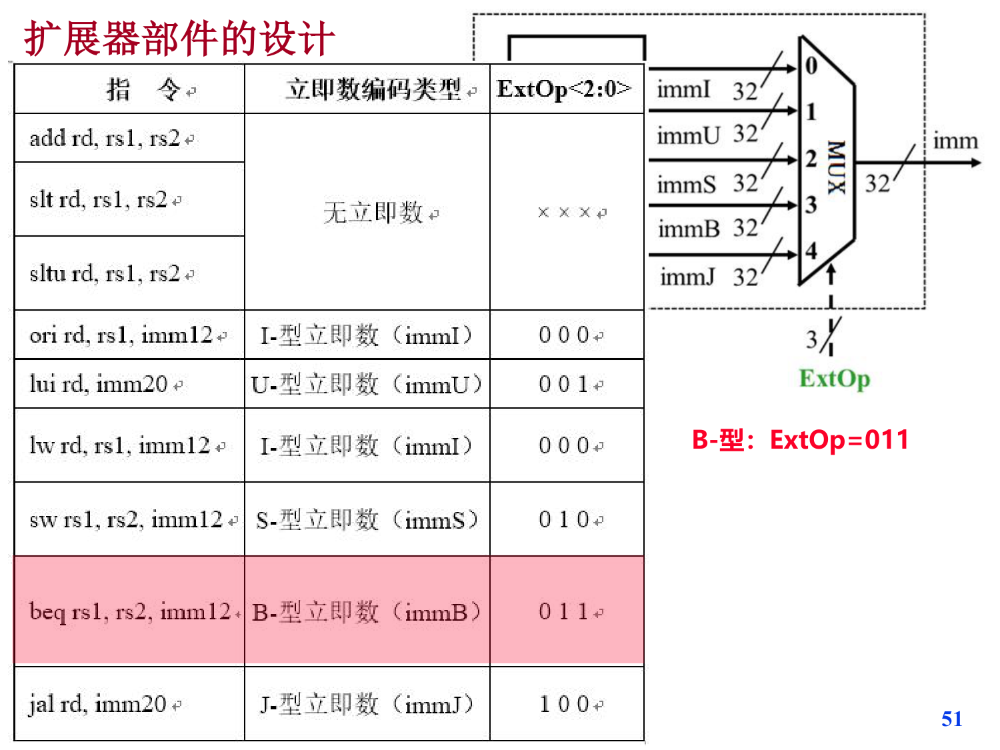
beq 用 B 型立即数 → ExtOp=011。注意立即数已经做了左移 1 位（在拼接逻辑里完成）。
下地址逻辑的具体实现
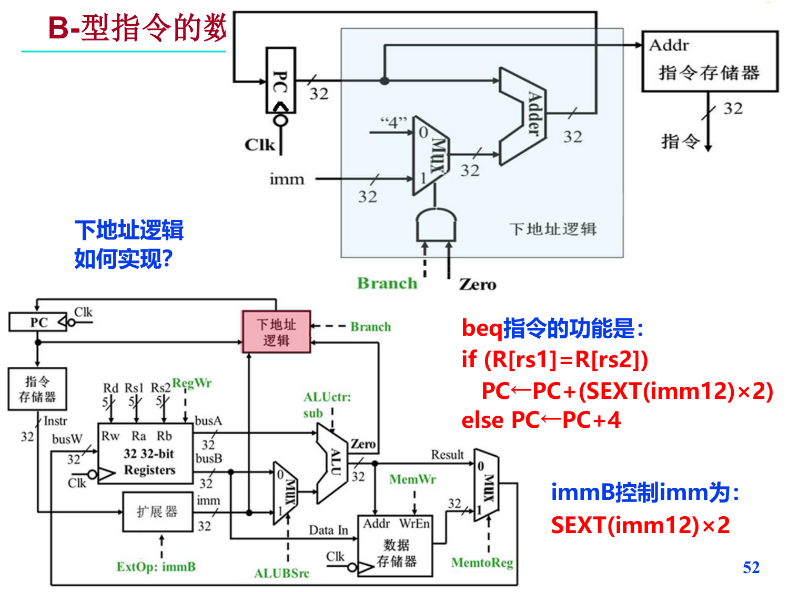
下地址逻辑盒子里有什么
看上半放大图：
- 一个 MUX：选"4"或"imm"作为加数
- 一个 Adder：PC + 选中的加数 → 下条 PC 候选
- 一个 AND 门：Branch & Zero → 控制 MUX
逻辑：
- Branch=0：MUX 选"4"，PC←PC+4（普通顺序）
- Branch=1 & Zero=1：MUX 选"imm"，PC←PC+imm（跳转成立）
- Branch=1 & Zero=0：MUX 选"4"，PC←PC+4（跳转不成立）
J-型指令 (jal) 的数据通路
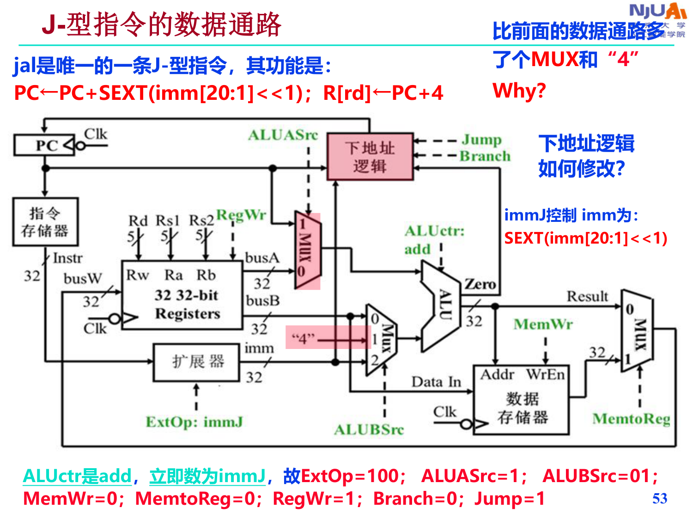
jal 干啥
R[rd] ← PC+4; PC ← PC + SEXT(imm20)×2。两件事：① 保存返回地址到 rd ② 无条件跳转。
新增了什么
- ALUASrc MUX：ALU 的 A 输入端 MUX——选寄存器 busA 还是 PC
- ALUBSrc 多了选项 "4"：现在 B 端 MUX 是 3 选 1（busB/imm/4）
- Jump 控制信号：告诉下地址逻辑"无条件跳"
jal 的两步合并实现
巧妙之处：ALU 算 PC + 4（ALUASrc=1 选 PC, ALUBSrc=01 选"4"），结果送 busW 写回 rd。同时下地址逻辑算 PC + imm 送 PC。一个时钟周期内两件事并行完成。
控制信号
- ExtOp=immJ (100), ALUASrc=1, ALUBSrc=01, ALUctr=add
- MemWr=0, MemtoReg=0, RegWr=1, Branch=0, Jump=1
jal 对应的 ALU 设置
jal → ALU 做 add（PC + 4）。
jal 对应的 ExtOp 设置
jal 用 J 型立即数 → ExtOp=100。
jal 的下地址逻辑（多了 Jump 通路）
下地址逻辑升级
相比 p52 beq 的版本，新增了 Jump 信号：
- OR 门：Jump | (Branch & Zero) → MUX 控制信号
- 逻辑：Jump=1 → 一定选 imm；Branch=1 & Zero=1 → 选 imm；其他 → 选 "4"
Putting it All Together：完整的单周期数据通路
这张图把前面所有零件拼起来了
左上：取指部件（IMem + PC + Adder + 下地址 MUX/AND/OR）
左下：寄存器组 + 扩展器
中间：ALU + 两个输入 MUX（ALUASrc, ALUBSrc）
右下：数据存储器 + 写回 MUX (MemtoReg)
九个绿色控制信号
ExtOp, RegWr, ALUASrc, ALUBSrc, ALUctr, MemWr, MemtoReg, Branch, Jump
下一讲：怎么根据指令产生那 9 个控制信号？（控制器的设计）
第二讲小结
关键 Takeaway
- CPU 设计直接决定时钟周期宽度和 CPI，二者乘 IC 就是 CPU 时间。
- CPU = Datapath + Control Unit。Datapath 包含操作元件（组合）+ 状态/存储元件（时序）。
- 定时：操作元件无存储，操作结果必须写到存储元件。时钟到来后 clk-to-Q 时刻状态元件开始更新。
- 9 条 RV32I 指令的数据通路：公共操作 = 取指 + PC+4；下址三选一：顺序/Branch+Zero/Jump；R 型/I 型/U 型/访存/B 型/J 型 逐步加部件。
第一份讲解到此结束。下一份（part2） 进入控制器设计（第三讲）+ 多周期处理器（第四讲）。
第三讲目录 · 跳过
第三讲：单周期控制器设计。把第二讲数据通路里那 9 个绿色控制信号"接上"——用一组组合逻辑根据指令产生它们。
The Big Picture：现在我们在哪儿？
下一目标：设计单周期数据通路的控制器
计算机五大组成：Processor (Control+Datapath) / Memory / Input / Output。第二讲做完了 Datapath，本讲补齐 Control。
设计方法（两步走）
- 根据每条指令的功能，分析每个控制信号的取值，列在真值表里
- 从真值表写出每个控制信号的逻辑表达式，画出电路
指令开始时取指部件中的动作
取指：所有指令都一样
Instruction ← M[PC]。所有指令都共享这一步，所以这步不需要控制信号"切换"。
一个细节：旧控制信号会不会捣乱？
取指时，新指令还没译码，控制信号还是上条指令的旧值。会不会出问题？
图上 Jump=previous, Branch=previous, Zero=previous 都是"上条指令留下来的"，但 MUX 选择的下条 PC 在整个周期结束前才被使用，所以无害。
R 型指令译码后的操作过程
蓝线 = R 型用到的数据通路
PC → IMem 取指 → opcode/funct 进控制器 → rs1/rs2 读寄存器 → busA/B → ALU → Result → MUX → busW → 写回 rd。
控制信号取值
- ALUASrc=0（A 选 busA）
- ALUBSrc=0（B 选 busB）
- ALUctr=add/slt/sltu
- Branch=0, Jump=0（不跳）
- MemWr=0（不写内存）
- MemtoReg=0（写回值来自 ALU）
- RegWr=1（写寄存器）
- ExtOp=×（不用立即数）
蓝色路径 = 数据真的流过的地方；灰色 = 这条指令用不到的元件。后面 p63-72 各条指令都按这个套路画。
R 型最后阶段取指部件的动作（PC ← PC + 4）
R 型不跳转，PC 顺序更新。下地址逻辑：Branch=0, Jump=0 → MUX 选"4" → Adder 算 PC+4 → 下个 Clk 到时写入 PC。
Register-Register (R 型) 操作定时（英文版）
怎么读这张时序波形图
从上到下每一行是一个信号，X 轴是时间。每一格相对前一格有一段延迟，叉号（XXX）表示"信号正在变化、还不稳定"。
关键时间点
- Clk 上升沿：PC 经 Clk-to-Q 后变成新值
- Instruction Memory Access Time 之后：取出的指令字段 Rs/Rt/Rd/Op/Func 稳定
- Delay through Control Logic：控制器产生 ALUctr, RegWr 等控制信号
- Register File Access Time：busA, busB 出现寄存器值
- ALU Delay：busW 上出现 ALU 结果
- 下一个 Clk 上升沿：busW 写入目的寄存器
R 型操作定时（中文版）
同 p64，中文标注。再看一遍六个延迟段：Clk-to-Q → 取指令时间 → 控制单元延迟 → 寄存器取数时间 → ALU 延迟 → 写目的寄存器。
I 型 (ori) 执行过程
蓝线：ori 用到的路径
取指 → 寄存器读 rs1 → busA 进 ALU A 口 → 同时立即数进扩展器（ExtOp=immI）→ imm 进 ALU B 口（ALUBSrc=2，选 imm）→ ALU 做 or → 写回 rd。
控制信号
- ALUASrc=0, ALUBSrc=2, ALUctr=or, ExtOp=immI
- RegWr=1, MemWr=0, MemtoReg=0, Branch=Jump=0
U 型 (lui) 执行过程
蓝线：取指 → 扩展器 (ExtOp=immU) → imm 进 ALU B 口 → ALU 做 srcB（直通 B）→ 结果写回 rd。寄存器组的读口几乎不用。
- ALUASrc=×（A 端不重要）, ALUBSrc=2, ALUctr=srcB, ExtOp=immU
- RegWr=1, 其他全 0
lw 执行过程
lw 的完整路径
取指 → 读 rs1 → busA → ALU A 口；扩展器 (immI) → ALU B 口 → ALU add → Addr 送数据存储器 → 读出数据 → MUX (MemtoReg=1 选内存) → busW → 写回 rd。
- ALUASrc=0, ALUBSrc=2, ALUctr=add, ExtOp=immI
- MemWr=0, MemtoReg=1, RegWr=1
sw 执行过程
取指 → 读 rs1（地址基址）+ rs2（要写的数据）→ ALU 算地址（rs1+immS）→ 写入数据存储器（MemWr=1, Data In = busB = R[rs2]）。
- ALUASrc=0, ALUBSrc=2, ALUctr=add, ExtOp=immS
- MemWr=1, MemtoReg=×, RegWr=0（不写寄存器）
beq 执行过程
取指 → 读 rs1, rs2 → busA, busB 都进 ALU → ALU 做 sub → Zero 信号送下地址逻辑；同时扩展器 (immB) 给出位移 → 下地址逻辑算 PC+offset → 由 Branch & Zero 决定写入 PC。
- ALUASrc=0, ALUBSrc=0（B 选 busB），ALUctr=sub, ExtOp=immB
- MemWr=0, Branch=1, Jump=0, RegWr=0
beq 最后阶段取指部件的动作
红线高亮 beq 决定 PC 的逻辑：if (Zero==1) PC=PC+imm else PC=PC+4。
下地址逻辑 MUX 控制信号 = Jump OR (Branch & Zero) = 0 OR (1 & Zero) = Zero。所以 Zero=1 选 imm 跳，Zero=0 选 4 顺序。
jal 执行过程 · 跳过细讲
jal 的执行过程已在 p53 详讲。这页核心要点：
- ALUASrc=1（A 选 PC，因为要算 PC+4 写回 rd）
- ALUBSrc=1（B 选"4"）
- ALUctr=add → 结果 = PC+4 → 写回 rd（保存返回地址）
- 同时下地址逻辑算 PC+immJ → 跳转 (Jump=1)
背景：真值表 → 逻辑表达式 → PLA 的链路
布尔逻辑设计的标准三步
- 列真值表：把所有"输入组合 → 输出"列出来
- 化简成逻辑表达式：积之和 (SOP) 或卡诺图化简
- 用 AND/OR/NOT 门搭出电路，或者用 PLA（可编程逻辑阵列）批量实现
PLA 是啥
PLA = Programmable Logic Array。结构：
- 上半：AND 平面。每根竖线代表一个"乘积项"（minterm），通过点连接选择哪些输入参与
- 下半：OR 平面。每根横线代表一个输出，通过点连接哪些乘积项要"或"起来
优点：把所有控制信号的逻辑表达式放在同一个矩形电路里，整齐、易修改。
SOP 形式回顾
任意布尔函数都可以写成"乘积项之和"。例如：
F = A·B·C + ~A·B·~C + A·~B·C
每个项是若干输入的 AND，所有项 OR 起来。这恰好对应 PLA 的 AND 平面 + OR 平面。
9 指令 × 9 控制信号 总表
怎么用这张表
横向 9 列 = 9 条指令；纵向 9 行 = 9 个控制信号。每个格子是该指令对该信号的取值。
关键观察
- Branch：只在 beq 列为 1，其他全 0 → 表达式：beq 的 opcode 识别 → 一项即可
- Jump：只在 jal 列为 1 → 同上
- RegWr：在 add/slt/sltu/ori/lui/lw/jal 时为 1，sw/beq 为 0 → 5 项 OR
- MemWr：只在 sw 时为 1
- ALUctr (4 位): 0000/0010/0011/0110/1111/0000/0000/1000/0000 — 多值信号
- ExtOp (3 位): ×/×/×/000/001/000/010/011/100 — R 型无所谓
单值信号的表达式怎么写
例：Branch = op<6> & op<5> & ~op<4> & ~op<3> & ~op<2> & op<1> & op<0>。意思就是：beq 的 opcode = 1100011，把每一位列出来 AND。
Jump = op<6> & op<5> & ~op<4> & op<3> & op<2> & op<1> & op<0> — jal 的 opcode = 1101111。
RegWr 的逻辑表达式
5 种来源 OR 起来
RegWr=1 的指令有：R-type、I-type-ALU (ori)、lui、Load (lw)、J-type (jal)。每种都是一个 opcode 模式：
RegWr = (R-type 的 opcode 识别) | (I-type-ALU 的 opcode 识别) | (lui 的 opcode 识别) | (Load 的 opcode 识别) | (J-type 的 opcode 识别)
每一项都是 7 位 opcode 的精确匹配（每一位 AND）。
回顾：ALU 操作真值表（对照看）
p37 的 ALU 真值表再看一遍。这里强调 ALUctr 是输入，决定 ALU 内部的 SUBctr/SIGctr/OPctr。
现在的问题是：ALUctr 本身怎么从指令里得到？ → 下页解答。
多值控制信号 ALUctr 的逻辑表达式生成
设计者的巧妙观察
仔细看 9 条指令的 ALUctr 取值：
- R 型（add=0000, slt=0010, sltu=0011）+ ori (0110) — 它们的 ALUctr 后 3 位正好等于 funct3 字段！第 1 位（MSB）固定为 0。
- lui: 1111；Load/Store/jal: 0000；beq: 1000
分类总结
| 指令类 | ALUctr<3:0> |
|---|---|
| R-type / I-type-ALU | 0 ‖ funct3 |
| lui | 1111 |
| Load/Store | 0000 |
| B-type | 1000 |
| J-type | 0000 |
ALUctr 每一位的逻辑表达式
设 funct3 = fn<2> fn<1> fn<0>
套用上页规律，4 位 ALUctr 的表达式：
- ALUctr<3> = lui 识别 | B-type 识别（这两类需要 MSB=1）
- ALUctr<2> = (R-type | I-type-ALU) & fn<2> | lui 识别
- ALUctr<1> = (R-type | I-type-ALU) & fn<1> | lui 识别
- ALUctr<0> = (R-type | I-type-ALU) & fn<0> | lui 识别
回顾：扩展器与 ExtOp
ExtOp 的表达式生成方法和 ALUctr 一样——按 ExtOp 编码 (000/001/010/011/100) 给每一位写表达式。R 型时 ExtOp 任意，所以在表达式里这些情况都可以归入"其他"。
根据逻辑表达式实现控制器的 PLA 电路
这张图分两层
- 上半 指令译码器（AND 平面）：7 个 AND 门，每个识别一类指令的 opcode（R-type / I-type-ALU / lui / load / store / B-type / J-type）。每根输出竖线代表"是不是这类指令"。
- 下半 控制信号生成（OR 平面）：每个控制信号是这 7 类的某种 OR 组合（或与 fn 位 AND 后再 OR）。
例如 RegWr 这根输出线，连接 R-type、I-type-ALU、lui、load、J-type 这 5 条竖线 OR 起来。
完整的单周期处理器
数据通路 + 控制器 = 完整 CPU
右上多了一个"控制器"方块。它的输入是 opcode (op<6:0>, 7 位) 和 funct3 (3 位)，输出是 9 个控制信号 (RegWr, ALUctr<3:0>, ALUASrc, ALUBSrc<1:0>, ExtOp<2:0>, MemWr, MemtoReg, Branch, Jump)。
所有绿色控制信号（虚线）从控制器伸出，连到各部件。这就是你最终要"造"出来的 CPU 的完整框图。
时钟周期的确定：关键路径分析
关键路径 (Critical Path)
所有指令中路径最长的那条决定时钟周期。对单周期 RV32I 子集，这条路径是 Load 指令：
PC's prop time (Clk-to-Q) + Instruction Memory's Access Time + Register File's Access Time + ALU to Perform a 32-bit Add + Data Memory Access Time + Setup Time for Register File Write + Clock Skew
6 段延迟串行累加
- PC 输出稳定（Clk-to-Q）
- 取指（IMem Access）
- 读寄存器（RegFile Access）
- ALU 算地址（ALU Add）
- 读数据存储器（DMem Access）
- 满足寄存器组 Setup 写回
+ 时钟偏移容限 Clock Skew。
lw 指令的执行时间作为时钟周期
这张图是 p65 的 R 型版加上了 ExtOp、ALUBSrc、MemtoReg、Address、Data Memory Access Time 几条新信号。每条延迟段连起来就是 lw 总执行时间，也就是单周期 CPU 的时钟周期。
单周期处理器的性能（CPI=1 真的好吗）
单周期 CPI=1，挺漂亮
每条指令一个时钟周期完成。CPI 越小性能越好——CPI=1 不是很棒吗？
问题在哪
- 性能除了 CPI，还看时钟周期宽度。
- 单周期的时钟宽度必须以最长指令为准（lw）。
- 很多指令明明短，比如 R 型不用访存，jal 不用读寄存器——但它们也要等够 lw 的时间。大量时间被浪费。
单周期性能：各类指令时长数字例
假设各功能单元延迟
- 存储单元（IMem/DMem）：200 ps
- ALU / Adder：100 ps
- 寄存器组（读/写）：50 ps
各类指令的总时长
| 指令类 | IMem | Reg读 | ALU | DMem | Reg写 | Total |
|---|---|---|---|---|---|---|
| R-type | 200 | 50 | 100 | 0 | 50 | 400 ps |
| Load | 200 | 50 | 100 | 200 | 50 | 600 ps |
| Store | 200 | 50 | 100 | 200 | 0 | 550 ps |
| Branch | 200 | 50 | 100 | 0 | 0 | 350 ps |
| Jump | 200 | 0 | 0 | 0 | 0 | 200 ps |
这就引出了下一节"多周期"——让短指令真的快起来。
第三讲小结
关键 Takeaway
- 单周期：每条指令一个时钟周期完成，时钟边沿前所有计算并行进行，到边沿统一写入。
- 取指后译码 → 不同指令走不同数据通路 → 控制信号决定每个 MUX/ALU 怎么选/算。
- 三种下址方式：
branch=jump=0 → PC+4；branch=zero=1 → PC+immB；jump=1 → PC+immJ。 - 控制器实现 = 列真值表 → 写逻辑表达式 → 用 PLA 实现。
下一讲：让指令分阶段执行，缩短时钟周期，提高效率 → 多周期处理器。
第四讲目录 · 跳过
第四讲：多周期处理器设计 + 异常/中断处理。
多周期处理器的实现思想
单周期的痛点
时钟周期 = 最复杂指令的执行时间 → 太长。短指令也得等。
多周期的思路
- 把指令分成若干阶段，每阶段在一个时钟周期内完成
- 时钟周期 = 最复杂阶段所花时间（远小于最长指令的总时间）
- 尽量让各阶段时长均衡
- 每阶段只做一种事：访存 OR 寄存器读/写 OR ALU 运算（其中一项）
多周期的好处
- 时钟周期短（虽然 CPI 变大）
- 不同指令周期数不同：Load 用 5 拍，Jump 用 3 拍（短指令真正快了）
- 功能部件可复用：只需要 1 个 ALU，不同周期用同一个 ALU 做不同事（取指算 PC+4 也用它）；IMem 和 DMem 可合并为一个 Memory
每步执行结果需要存到临时寄存器（下个时钟周期才能用）。这是多周期相比单周期的额外开销。
多周期实现目标：一个简单的指令系统
简化版指令格式（教学用，非 RV32I）
32 位指令，单一格式：[imm16][Rs][Rt][OP]（16+5+5+6 位）。
5 类指令
- R 型：R[Rt] ← R[Rs] op R[Rt]
- I 型运算：R[Rt] ← R[Rs] op EXT[imm16]
- Load：R[Rt] ← M[R[Rs] + SEXT(imm16)]
- Store：M[R[Rs] + SEXT(imm16)] ← R[Rt]
- Jump：PC ← PC + SEXT(imm16)
背景：有限状态机（FSM）极速回顾
FSM 三件套
- 状态集 S：系统当前可能处于的所有状态
- 转移函数：当前状态 + 输入 → 下个状态
- 输出函数：当前状态（+ 可能的输入）→ 输出
状态转换图怎么画
每个状态是一个圆圈（标注：状态号 + 该状态输出的控制信号取值）。每条转移是一个带箭头的弧（标注：触发条件）。
例子：一个简化的多周期处理器
状态 0 = 取指；状态 1 = 译码 + 读寄存器；状态 2~9 = 各类指令的执行/写回阶段。每个时钟边沿到来，FSM 跳到下个状态。
实现方式
- 硬连线（Hardwired）：用状态寄存器 + 组合逻辑（PLA）实现转移函数和输出。
- 微程序（Microprogrammed）：把"每个状态对应的控制信号"编码成微指令，放在 ROM 里（控制存储器 CS）。μPC 像 PC 一样递增，挨个读出来执行。
多周期处理器的状态转换图
10 个状态
- 状态 0 (IFetch)：取指 — 所有指令共享
- 状态 1 (RFetch/ID)：读寄存器/译码 — 所有指令共享
- 状态 1 后根据译码结果分叉：
- 2: JFinish（Jump 结束）
- 3: IExec → 5: RIFinish（I 型运算执行 → 写回）
- 4: RExec → 5: RIFinish（R 型执行 → 写回）
- 6: swExec → 7: swFinish（Store）
- 8: lwExec → 9: lwfinish（Load）
各类指令需要几个时钟
| 类型 | 路径 | 时钟数 |
|---|---|---|
| R 型 | 0→1→4→5 | 4 |
| I 型运算 | 0→1→3→5 | 4 |
| lw | 0→1→8→9 | 4 |
| sw | 0→1→6→7 | 4 |
| Jump | 0→1→2 | 3 |
每个圆圈里的字（如 "MARWr, ExtOp, ..."）= 该状态有效的控制信号。每个时钟边沿到来，FSM 进入下一个状态，新的控制信号生效。
多周期控制器：硬连线 vs 微程序
两条实现路
| 步骤 | 硬连线 | 微程序 |
|---|---|---|
| 初始表示 | Finite State Diagram | Microprogram |
| 顺序控制 | Explicit Next State Function | μPC + Dispatch ROMs |
| 逻辑表示 | Logic Equations | Truth Tables |
| 实现技术 | PLA | ROM |
关键区别
- 硬连线：直接用组合逻辑电路实现 FSM。速度快，但复杂指令集时电路庞杂。
- 微程序：把每个状态的控制信号编码成微指令，存在 ROM 里，像跑程序一样按 μPC 顺序读出。规整、易修改，但慢。
硬连线 vs 微程序的特点
硬连线
- 优点：速度快，适合简单/规整的指令系统
- 缺点：多输入/多输出巨大逻辑网络，复杂 ISA 难实现/维护，灵活性差
微程序的基本思想
- 仿照程序设计的方法，编制每个指令对应的微程序
- 微程序 = 若干微指令组成的序列
- 微指令 = 若干微命令（控制信号取值）的组合
- 所有微程序放在 控存 (Control Storage, CS)（一个 ROM）里
- 执行指令时：取出对应微程序的微指令，译码产生微命令 = 控制信号
微程序优点
规整、可维护、灵活，但速度慢（多一层 ROM 查表）。
微程序控制器的基本结构
方框逐个认
- μPC：微程序计数器，指向 CS 中要执行的下条微指令
- CS (控制存储器)：ROM，存所有微程序
- μIR：微指令寄存器，存"正在执行的微指令"
- 译码器：把 μIR 译成控制信号（微命令）
- 起始和转移地址发生器：根据 IR（机器指令）和条件码决定下条微指令的 μPC
工作循环
- 取出一条机器指令到 IR
- 起始地址发生器算出该指令的微程序首址 → μPC
- 每个时钟：CS[μPC] → μIR → 译码 → 控制信号 → 数据通路执行
- 顺序时 μPC+1；遇分支微指令时由转移地址发生器决定
微程序 / 微指令 / 微命令 / 微操作的层次
从机器指令到微操作的四层
- 一条机器指令 对应 一个微程序
- 一个微程序 = 多条微指令序列
- 一条微指令 = 多个微命令的集合（一个 0/1 串）
- 一个微命令 = 一个微操作（一个具体的硬件动作，如 PCWr）
程序执行需要回答两个问题
- 指令如何译码、执行
- 下条指令到哪里去取
微程序执行需要回答两个对应问题
- 微指令如何对微命令编码（水平 vs 垂直，下页讲）
- 下条微指令在哪里（顺序/分支）
第一个问题：微指令格式（水平 vs 垂直）
水平型微指令
- 思想：相容微命令尽量多地塞进一条微指令
- 优点：微程序短，并行性高，速度快
- 缺点：微指令长，编码空间利用低，编制困难
垂直型微指令
- 思想：一条微指令只控制 1~2 个微命令（类似机器指令）
- 优点：微指令短，编码紧凑，编制容易
- 缺点：微程序长、无并行、慢
现代 CPU 微码用的是水平型偏多——硬件资源足够，速度优先。
异常和中断的处理（分类）
"中断"事件分两大类
| 类型 | 来源 | 例子 |
|---|---|---|
| 内部异常 | CPU 内部 | 硬故障中断（掉电、线路故障） 程序性中断（溢出、缺页、越界、非法指令、除零、系统调用） |
| 外部中断 | CPU 外部 | 实时钟、控制台、打印机缺纸、外设就绪、DMA 结束 |
共同特征
CPU 暂停当前程序，转去执行"异常处理程序"，处理完返回断点继续。所有的"中断"在硬件上需要类似的机制：保存现场 → 跳处理程序 → 恢复现场 → 返回。
处理器中的异常处理机制
检测到异常时的三步基本动作
- 关中断（"中断/异常允许"状态位清 0）：防止新异常破坏现场
- 保护断点和程序状态：
- PC 存入栈或专门的"断点寄存器"（RISC-V 用
mepc/sepc，MIPS 用EPC，x86 压栈） - PSW（程序状态字，含条件码、状态位、中断码）存入 EPSWR 或栈（RISC-V 用
mstatus/sstatus，x86 用EFLAGS）
- PC 存入栈或专门的"断点寄存器"（RISC-V 用
- 识别异常事件：软件识别（查询）或硬件识别（向量中断）
带异常处理的数据通路设计
在原多周期 CPU 上加什么
- EPC 寄存器（32 位）：存放断点 PC。注意——故障类异常断点是正在执行的指令地址（需 PC-4，因为 PC 已被取指 +4），自陷/中断类断点是下条指令地址（直接送 PC）。
- Cause 寄存器（32 位）：记录异常原因。假设两种：非法指令 (Cause=1)，溢出 (Cause=2)。
- EPCWr, CauseWr：写使能信号
- CauseMUX：选 1 还是 2 写入 Cause
- PCMUX：在原有 PC 输入端再加一个 MUX，让"异常处理程序入口地址"（如 0x10000）也能写入 PC
这些新部件的加入不改变原数据通路骨架，只是多了几个寄存器和 MUX。
带异常处理的控制器设计
FSM 添加两个状态
- 状态 10：UndefInstr（非法指令异常）
- 状态 11：Overflow（溢出异常）
每个异常状态做的事
- 设 Cause 寄存器
- 计算 EPC = PC - 4，送入 EPC
- 把异常处理程序入口地址写入 PC
异常检测时机
- 非法指令：译码器发现 op 字段是未定义编码 → 跳状态 10
- 溢出：R/I 型运算后条件码 O 标志=1 → 跳状态 11
加入异常处理后的有限状态转换图
原图 (p89) 基础上：
- 状态 1 后如果检测到"other"（不在 5 类合法指令中）→ 跳到状态 10 (undefInstr)
- 状态 5 (RIFinish) 后如果检测到 overflow → 跳到状态 11 (overflew)
- 状态 10/11 完成异常响应（设置 Cause/EPC/PC=入口地址）后回到状态 0 重新取指
单周期 vs 多周期 成本与性能对比
成本对比
- 单周期：功能部件不能复用（每条路径都要自己的 Adder 等）；执行结果直接进 PC/RegFile/Memory，不需要临时寄存器
- 多周期：部件可复用（一个 ALU 全场跑），但需要临时寄存器存中间结果
性能对比：CPI 计算示例
假设指令混合：Load 22%, Store 11%, R-Type 49%, Branch 16%, Jump 2%。每种指令时钟数：Load=5, Store=4, R=4, Branch=3, Jump=3。
但多周期时钟周期约为单周期的 1/5（因为单周期时钟以 lw 全过程为准，多周期以最长阶段为准）：
单周期总时间 = 1 × 1 = 1
前四讲总结 1：CPU 主要功能 + 内部结构
CPU 功能
- 周而复始执行指令
- 过程中发现异常 → 异常处理
- 每条指令结束查中断请求
CPU 内部结构
- Datapath：组合逻辑单元（ALU/Adder/MUX/扩展器/状态单元读口）+ 状态单元（触发器、寄存器、寄存器组、Mem）
- Control Unit：对指令译码，结合条件码/时钟，产生控制信号
前四讲总结 2：CPU 中的寄存器分类
用户可见寄存器
- 通用寄存器 (GPRs)：放任意地址/数据，指令中显式给出编号
- 专用寄存器：存特定地址/数据，无需显式给出（如 SP）
- 标志寄存器、PC：部分可见。由 CPU 设定，用户程序只能隐含读，不能直接改
用户不可见的控制/状态寄存器
- IR、MAR、MDR、PSWR、临时寄存器
- 进程控制块指针、系统堆栈指针、页表指针等
前四讲总结 3：指令执行过程 + 定时方式
指令执行过程
取指 → 译码 → 取数 → 运算 → 存结果 → 查中断。
三个时间术语
- 指令周期：取出并执行一条指令的时间
- 时钟周期：CPU 最小时间单位
- 机器周期：传统三级时序里完成一次访存的时间（现代已淡化）
数据通路定时
- 现代用时钟统一定时
- 时钟边沿到 → 状态元件可写
- 每周期都更新的元件不需要 WE；否则需要
前四讲总结 4：单周期 vs 多周期对比
单周期
- 每条指令在 1 个时钟周期内完成
- 时钟周期 = 最长 Load 指令时间
- 不需要临时寄存器
- 功能部件不能复用
- 控制信号整个周期不变，控制器设计简单（一张真值表搞定）
多周期
- 每条指令分成多个阶段，每阶段 1 个时钟
- 不同指令时钟数不同
- 阶段要均衡，每阶段只完成1 个独立简单功能（1 次 ALU OR 1 次访存 OR 1 次寄存器存取）
- 需要临时寄存器
- 同一部件能在不同周期被复用
- 用 FSM 描述执行流程并设计控制器
前四讲总结 5：控制单元的两种实现方式
有限状态机方式 (硬连线/硬布线)
- 每个时钟周期的控制信号组合 = 一个状态
- 状态转换图 + 状态寄存器 + 组合逻辑（PLA）
- 速度快，复杂指令集时电路庞杂
微程序方式
- 每条机器指令对应一个微程序
- 每条微指令对应一个状态，包含若干微命令
- 所有微程序存在控制存储器（ROM）中
- 每来一个时钟执行一条微指令
第二份讲解到此结束。下一份（part3） 讲流水线（第五讲）+ 流水线冒险（第六讲）。
第五讲目录 · 跳过
第五讲：流水线数据通路和控制。从直觉到设计到性能。
背景：吞吐率 vs 延迟（流水线的"卖点"）
两个相关但不同的概念
- 延迟 (Latency)：单一任务从开始到结束的时间
- 吞吐率 (Throughput)：单位时间能完成多少任务
流水线的关键洞察
流水线不能缩短单个任务的延迟，但能大幅提高吞吐率——因为多个任务可以"重叠"进行，每个阶段被不同任务复用。
类比：洗衣店
洗一批衣服 = 洗 30min + 烘 40min + 叠 20min = 90 min（不可压缩）。
但如果有 4 批衣服：
- 串行：4 × 90 = 360 min
- 流水：30 + 4×40 + 20 = 210 min（提速接近 3 倍）
第一批仍然要等 90 min，但后续每 40 min 就完成一批。延迟没变，吞吐率提高。
洗衣服例子 (Laundry Example)
背景设定
- 4 个人 (Ann, Brian, Cathy, Dave) 各自一批衣服
- 洗衣机 30 min；烘干机 40 min；折衣 20 min
你怎么安排
这就是流水线的启蒙问题。看着简单，"流水线是自然而然的" — 你管理洗衣店肯定会自动想到边洗 B 边烘 A 边叠之前的。
Sequential Laundry (串行)
一批衣服完成才开始下一批：
一般化：N 批衣服 → 90N 分钟。
图上看：每个时刻只有一台机器在工作，其余空闲。资源利用率 1/3。
Pipelined Laundry (流水)
每个机器一忙完就接手下一批
一般化：N 批衣服
N 较大时，主导项是 40N——也就是"最长那段"的时间。所以：
流水线的两个理想假设
- 每个阶段时间相等（"均衡"）
- 没有依赖、不需要停顿
真实 CPU 流水线两者都不完美，导致流水线冒险（第六讲主题）。
单周期模型 vs 流水模型 性能比较
每个阶段所花时间
- 取指：2 ns
- 寄存器读：1 ns
- ALU 操作：2 ns
- 存储器读：2 ns
- 寄存器写：1 ns
Load 总时间 = 2+1+2+2+1 = 8 ns（最长指令）。
单周期模型
- 时钟周期 = 8 ns（被 lw 拖死）
- N 条指令时间 = 8N ns
流水线模型
- 时钟周期 = 最长阶段 = 2 ns
- 每条指令延迟 = 2 ns × 5 = 10 ns（比单周期还长 2 ns！）
- 但 N 条指令总时间 = (4 + N) × 2 ns（前 4 个时钟流水线填充，之后每拍一条指令完成）
- N 很大时，比串行提速约 4 倍。若各阶段都恰好 2 ns，则满 5 倍。
波形图对比：单周期 vs 流水线
5 条指令的流水线波形
R-type 4 阶段 (Ifetch/Reg/Dec/Exec/Wr)，Load 5 阶段 (多 Mem)。第 7 周期出现 "Ops! We have a problem!" — 两条指令同时尝试写寄存器。这就是结构冒险的引子（p117 详讲）。
第五讲小结（前半）
到这里学到了什么
- 指令的执行可以像洗衣服一样，用流水线方式进行
- 均衡时指令吞吐率提高 N 倍，但不能缩短一条指令的执行时间
- 流水段数以最复杂指令所需步骤数为准；每段宽度以最复杂阶段所需时间为准
以 Load 为准分 5 个阶段
| 阶段 | 名字 | 做的事 | 用的部件 |
|---|---|---|---|
| 1 | IF | 取指令、PC+4 | IMem, Adder |
| 2 | ID | 译码、读寄存器、立即数扩展 | Decoder, Reg读口, Extender |
| 3 | EX | ALU 运算 / 算转移目标 | ALU, Adder |
| 4 | M | 读/写数据存储器（如有） | DMem |
| 5 | WB | 写回寄存器 | Reg写口 |
"2025 年度结于此处" · 跳过
教师在 2025 学年讲到这里结束。后续 p114-130 是更深入的流水线内容（指令集设计要求、各指令流水阶段、竞争、冒险），属于第 6 讲范畴。
流水线指令集的设计
什么样的 ISA 适合流水线？
- 指令长度一致：简化取指和译码。RV32I 都 32 位 → PC+4 万事大吉；x86 长度 1~17 字节 → 取指部件复杂到爆炸。
- 格式少，源寄存器位置固定：在未知指令类型时就能开始读寄存器。RV32I 的 rs1/rs2 位置在 R/I/S/B 格式里都固定，可以提前并行读。
- 只有 load/store 可访存：算术指令和访存分阶段——保持流水线规整。x86 的 ALU 指令可以直接操作内存，导致单条指令要算地址+访存+运算，无法塞进一个 EX 段。
- 内存"对齐"存放：访存少跨界，简化 Mem 段。
R-type 指令的 4 个阶段
R 型不访存，所以理论上只要 4 阶段：
- Ifetch：取指 + PC+4
- Reg/Dec：寄存器取数 + 译码
- Exec：ALU 运算
- Wr：写回寄存器
但接下来会发现，必须人为加一个空的 Mem 段 → 让 Wr 推迟到第 5 阶段，所有指令对齐到 5 阶段。这就是 p118 要解决的事。
Load 指令的流水线（5 阶段全展开）
3 条 lw 指令叠在一起
波形上每条指令晚一个时钟启动。第 5 个时钟时：
- 1st lw 在 Wr
- 2nd lw 在 Mem
- 3rd lw 在 Exec
- 4th lw 在 Reg/Dec（即将进入）
- 5th lw 在 Ifetch（即将进入）
• 每个周期 5 个功能部件同时工作
• 每周期一条指令进入流水线
• 每周期一条指令完成
• 有效 CPI = 1
每条 lw 仍然要 5 个时钟，但每个时钟都有一条指令产出——这就是吞吐率提高的精髓。
含 R-type 和 Load 的混合流水线 · 暴露结构冒险
问题
R-type 4 阶段，Load 5 阶段。把它们交错放：
第 7 周期出现：Load 在 Wr（第 5 阶段），后面紧跟的 R-type 在 Wr（第 4 阶段）—— 两条指令同时想写寄存器。同一个写口被两条指令同时使用 = 资源冲突。
这就是结构冒险 (Structural Hazard)
同一功能部件同一时刻被多条指令占用。本来流水线的前提就是"每个阶段被不同指令同时占用"，但每个阶段对应各自独立的资源。一旦不同阶段的指令想抢同一物理资源，就崩了。
流水线设计的两条铁律
② 每个功能部件必须在相同的阶段被使用（写口总在第 5 阶段被使用）。
怎么实现规则 ②？让 R-type 的写也推迟到第 5 阶段——下页方案。
R-type 的 Wr 操作延后一个周期
方法
在 R-type 的 Exec 后插入一个空的 Mem 段 (NOP)，让 Wr 推到第 5 段。所有指令现在都是 5 段（IF/ID/EX/M/WB），Wr 永远在第 5 段发生——规则 ② 满足。
代价
R-type 多了一个空操作周期，单条指令延迟从 4 变 5。但吞吐率不变（仍然每拍出一条），实际开销很小。
Store 指令的四个阶段
Store 真正需要的阶段
- Ifetch：取指、PC+4
- Reg/Dec：读 rs1 (基址), 读 rs2 (要写的数据), 译码
- Exec：算地址 (rs1 + SEXT(imm12))
- Mem：写数据存储器
- Wr：空（NOP）— Store 不写寄存器，加这一段只是为对齐
Store 也跑满 5 阶段，第 5 阶段啥都不干。流水线规整 > 节省 1 个 NOP 周期。
Beq 的四个阶段
beq 真正需要的阶段
- Ifetch：取指、PC+4
- Reg/Dec：读 rs1, rs2, 译码
- Exec：① ALU 算 rs1-rs2（比较）② Adder 算转移地址
- Mem：如果 Zero=1，把目标地址写到 PC
- Wr：空 NOP
分支决定在 Mem 段才完成——这是控制冒险的根源（p125 详讲）。比 beq 后面紧跟的指令此时已经被取出来 2-3 个了！
流水线中的"竞争"问题
多周期中怎么解决 Addr/WrEn 竞争
多周期中：第 N 周期末让 Addr 有效，第 N+1 周期让 WrEn 有效 — 保证 Addr 先到。
流水线为啥不能这么做
因为每个周期都必须能写（Register / Memory），不能像多周期那样把 WrEn 推迟一拍——会卡住整条流水线。
第五讲完整小结

关键 Takeaway
- 指令执行可以像洗衣服一样流水化，吞吐率提 N 倍，单条延迟不变
- 流水段数 = 最复杂指令的步骤数；每段宽度 = 最复杂阶段时间
- 以 Load 为准分 5 阶段：IF / ID / EX / M / WB
- 流水线控制：在 ID 段生成所有控制信号，随指令流水到后续阶段（不再需要 FSM）
- 三种冒险：结构 / 数据 / 控制——下一讲讲
第六讲目录 · 跳过
第六讲：流水线冒险的处理。三种冒险 (结构/数据/控制) 的现象与对策。
流水线三种冒险（Hazard）总览
Hazard 的定义
流水线遇到无法正确执行后续指令，或执行了不该执行的指令的情况。
三种冒险
| 名称 | 现象 | 典型对策 |
|---|---|---|
| 结构冒险 (hardware resource conflicts) | 同一部件被多条指令同时使用 | ① 每部件每条指令只能用 1 次 ② 只能在特定阶段使用 ③ 设置多个独立部件（IM/DM 分开） |
| 数据冒险 (data dependencies) | 后面指令用到前面指令的结果，但前面还没写完 | ① 转发 Forwarding/Bypassing ② Load-use 必须阻塞 1 拍 ③ 编译器优化指令顺序 |
| 控制冒险 (branch hazards) | 分支/异常改变 PC，但后续指令已被取入流水线 | ① 静态/动态分支预测 ② 延迟分支（编译器调度） |
背景：转发 / 阻塞 / 预测 三个核心机制
转发 (Forwarding / Bypassing)
前一条指令的结果还没写回寄存器，但已经在 EX 段算完了——可以从 EX 段输出端直接接线到后一条指令的 EX 输入端。不等写回也能用。
阻塞 (Stall) — 又叫"气泡 Bubble"
实在没法避免冲突时，让后面指令暂停一拍（IF/ID 段冻结，EX 段进 NOP）。流水线里出现一个"空泡"。CPI 上升。
典型场景：Load-use 冒险。lw 在 Mem 段才能拿到数据，下条指令立即要用——转发都来不及，必须 stall 1 拍。
预测 (Prediction)
分支指令在 Mem 段才知道走哪，但流水线已经取了 2-3 条后续指令——提前猜，猜对则继续，猜错就把流水线里的错指令清空（flush）。
- 静态预测：总是预测"不跳"（针对前向跳转），准确率 65-85%
- 动态预测：根据历史调整，准确率可达 90%+
三机制一图记
[ 转发 ] ← 修补"数据还没到位"的依赖 [ 阻塞 ] ← 实在没法时的兜底 [ 预测 ] ← 分支不可知时的赌博
Control Hazard 的解决方法
四种解决方法
- 硬件阻塞：在分支后插 3 个 NOP（硬件把后续指令清 0）。简单但效率低。
- 软件插 NOP：编译器在分支指令后塞 3 个 NOP。同样低效。
- 分支预测：
- 静态：总是预测 not taken。+启发式（循环底部跳总成立）。准确率 65-85%
- 动态：根据历史调整。准确率 90%+
- 延迟分支 Delayed Branch：把与分支无关的前置指令挪到分支指令后面执行。编译器在编译期完成调度，分支后的"延迟槽"被有用工作填满。
异常/中断也是一种控制冒险（突然改变 PC），处理逻辑类似。
三种处理器实现方式的综合性能比较
条件假设
指令混合 (假设)：Load 25%, Store 10%, R-Type/ALU 52%, Branch 11%, Jump 2%。每个功能部件最长 200 ps，单周期 lw 总 600 ps。
三种方式的 N 条指令总时间
单周期
时钟周期 = 600 ps（被 lw 决定），N 条指令 = 600N ps
多周期
时钟周期 = 200 ps（最长功能部件），CPI 计算：
N 条指令 = 4.12 × 200 × N = 824N ps
流水线
时钟周期 = 200 ps。CPI 计算（要考虑冒险造成的额外周期）：
- Load：load-use 依赖时多 1 拍，否则 1 拍 → 平均 1.5 拍
- Store/ALU：1 拍
- Branch：预测对 1 拍，错则 2 拍 → 平均 1.25 拍
- Jump：2 拍（要等译码段完才能算目标地址）
N 条指令 = 1.17 × 200 × N = 234N ps
三者比较
| 总时间 | 相对 | |
|---|---|---|
| 单周期 | 600N | 慢 1× |
| 多周期 | 824N | 更慢 (!) |
| 流水线 | 234N | 快约 2.5× |
流水线无悬念赢——同时享受到"短时钟周期" + "接近 1 的 CPI"。
本章 5~7 讲总结 2：三种方式的时序对比图
三种实现的视觉对比
- 单周期：每个时钟（很长）做完一条指令；Store 比 Load 短但要等同一个时钟 → 浪费
- 多周期：时钟短了 5 倍，但每条指令仍按"段数 × 时钟"顺序执行，没有重叠
- 流水线：同样短时钟，但不同指令的不同阶段在同一时钟内并行——这就是吞吐率的来源
本章 5~7 讲总结 3：流水线的局限 + 高级技术
流水线的局限
- 并非每条指令都有相同段数
- 并非每段都一样长（必须对齐到最长）
- 流水线深度越大，寄存器额外开销比例越大
- 遇到资源冲突、数据相关、控制相关时发生冒险
更高级的流水线技术
- 超流水线 (Super-Pipelined)：流水段更多、更细（如 Intel Pentium 4 高达 20+ 段），主频更高
- 多发射流水线 (Multi-Issue)：同时发射多条指令进同一流水线
- 静态多发射 (VLIW)：编译器把多条无依赖的指令打包发射
- 动态多发射 (超标量 Superscalar)：硬件动态分析依赖、调度发射
本章 5~7 讲总结 4：三种冒险对策汇总
结构冒险（资源冲突）
- 规定每部件每条指令只能用 1 次
- 规定每部件只能在特定阶段用
- 指令存储器 IM 和数据存储器 DM 分开（哈佛架构）
数据冒险（数据相关）
"后面指令的源操作数 = 前面指令的目的"
- 软件阻塞：编译器在数据相关指令前插 nop
- 硬件阻塞 (stall)：硬件在特定流水段插"气泡"
- 转发 Forwarding/Bypassing：把前面执行结果直接传到后面指令的相应流水段（最常用！）
- 对 Load-use：阻塞+转发组合
① 前面指令结果在 EX 末就能拿到（如 add）→ 完全可用转发解决
② 前面指令结果在 Mem 末才能拿到（Load）→ 至少 stall 1 拍，再转发
本章 5~7 讲总结 5：控制冒险细化
控制冒险的定义
返回指令、分支指令等可能改变顺序增量的 PC 值。由于获取转移目标地址要时间，目标地址产生前已有错误指令进入流水线 → 控制冒险。
四种对策汇总
- 软件阻塞：编译器在控制相关指令后插 nop
- 硬件阻塞：硬件插气泡停顿若干拍，直到 PC 确定
- 分支预测：
- 静态：总猜 not taken
- 动态：根据历史，可达 90%+ 准确
- 延迟分支：编译器把前面的无关指令挪到分支指令后执行（延迟槽）
异常/中断是特殊的控制冒险，流水线中实现具有挑战性（要在正确的指令边界精确触发）。
组成指令功能的四种基本操作 + RTL
无论 ISA 多复杂，指令的基本操作只有 4 种
- 读取某主存单元到寄存器（取指、取数）
- 把寄存器存到主存（存结果）
- 寄存器之间或寄存器到 ALU 传送数据（取数、存结果）
- 算术或逻辑运算（PC+1、算地址、运算）
RTL（寄存器传送语言）回顾
R[r]：寄存器 r 的内容M[addr]：主存单元 addr 的内容PC：直接表示其内容；M[PC]：PC 所指内存单元内容SEXT[imm]/ZEXT[imm]：符号/零扩展←：传送，源在右，目的在左
例
R[x8] ← M[R[x9]+SEXT(imm12)] = 把"x9 的内容 + 立即数（符号扩展）"作为内存地址，取出内容送到寄存器 x8。这正是 lw x8, x9, imm12。
CPU 基本组成原理图（全章收束）
把整章拉回到最初的"全家福"
图分两大块：
- 左边 执行部件 (Datapath)：通用寄存器组 + ALU + 状态寄存器 + 总线控制逻辑
- 右边 控制部件 (Control)：指令译码器、操作控制信号形成部件、时序信号产生部件、启停控制、脉冲源、程序计数器 PC、指令寄存器 IR、中断机构
整章的脉络（最后一遍回看）
- 第一讲：理论基础——CPU 由什么组成？组合 vs 时序、时钟周期约束、性能公式 IC × CPI × T_clk
- 第二讲：动手设计单周期数据通路——9 条 RV32I 指令逐个加部件
- 第三讲：单周期控制器——真值表 → 逻辑表达式 → PLA
- 第四讲：多周期处理器——分阶段、FSM、硬连线 vs 微程序、异常处理
- 第五讲：流水线——洗衣服直觉、5 阶段切分、各类指令的流水化
- 第六讲：流水线冒险——结构/数据/控制三种 + 转发/阻塞/预测三大对策
① CPU = Datapath + Control Unit
② 性能 = IC × CPI × T_clk，三者相互制约
② 单周期 → 多周期 → 流水线，都是在三因子上做权衡的不同实现方式
整章结束。这三份讲解合起来 = 一份完整的章节学习资料。